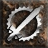

 Concentration 5.36% (10.0)
Popular builds include:
28.28% of Paladin's invest heavily in Fist of the Heavens, Holy Bolt, Sanctuary
21.72% of Paladin's invest heavily in Blessed Hammer, Blessed Aim, Vigor
16.16% of Paladin's invest heavily in Holy Shield, Fanaticism, Smite
14.14% of Paladin's invest heavily in Holy Bolt, Fist of the Heavens, Holy Shock
11.62% of Paladin's invest heavily in Salvation, Conviction, Resist Lightning
5.05% of Paladin's invest heavily in Sanctuary, Cleansing, Holy Bolt
3.03% of Paladin's invest heavily in Salvation, Resist Cold, Resist Lightning
Other Skills:
 Holy Shock 87.5% (723.0)
Holy Shock 87.5% (723.0) Holy Shield 100.0% (439.0)
Holy Shield 100.0% (439.0) Conviction 80.36% (96.0)
Conviction 80.36% (96.0) Precision 100.0% (75.0)
Precision 100.0% (75.0) Holy Fire 100.0% (61.0)
Holy Fire 100.0% (61.0) Prayer 96.43% (59.0)
Prayer 96.43% (59.0)
Skills: Holy Bolt:20, Fist of the Heavens:20, Holy Shock:20, Sanctuary:20, Holy Shield:10, Sacrifice:1, Smite:1, Zeal:1, Charge:1, Vengeance:1, Blessed Hammer:1, Absolution:1, Might:1, Holy Fire:1, Precision:1, Holy Freeze:1, Conviction:1, Prayer:1, Defiance:1, Cleansing:1, Vigor:1, Redemption:1, Salvation:1
Equipment: gloves: Trang-Oul's Claws x1, ring: The Stone of Jordan x1, ring: Bul-Kathos' Wedding Band x1, helmet: Dire Brow x1, belt: Arachnid Mesh x1, amulet: Dread Beads x1, body: Enigma x1, boots: Corpse Track x1, Left hand: Call to Arms x1, Left hand: Hand of Blessed Light x1, Offhand: Medusa's Gaze x1, Offhand: Herald of Zakarum x1
Skills: Holy Bolt:20, Fist of the Heavens:20, Holy Shock:20, Sanctuary:20, Holy Shield:7, Sacrifice:1, Smite:1, Zeal:1, Charge:1, Vengeance:1, Blessed Hammer:1, Absolution:1, Might:1, Holy Fire:1, Precision:1, Holy Freeze:1, Conviction:1, Prayer:1, Defiance:1, Cleansing:1, Vigor:1, Redemption:1, Salvation:1
Equipment: gloves: Trang-Oul's Claws x1, amulet: Mara's Kaleidoscope x1, helmet: Harlequin Crest x1, belt: Arachnid Mesh x1, body: Skin of the Vipermagi x1, boots: War Traveler x1, ring: Bul-Kathos' Wedding Band x2, Left hand: Holy Thunder x1, Left hand: Heart of the Oak x1, Offhand: Spirit x2
Skills: Holy Bolt:20, Fist of the Heavens:20, Holy Shock:20, Sanctuary:20, Holy Shield:6, Redemption:3, Sacrifice:1, Smite:1, Zeal:1, Charge:1, Vengeance:1, Blessed Hammer:1, Absolution:1, Might:1, Holy Fire:1, Precision:1, Holy Freeze:1, Conviction:1, Prayer:1, Defiance:1, Cleansing:1, Vigor:1
Equipment: helmet: Harlequin Crest x1, boots: Sandstorm Trek x1, body: Skin of the Vipermagi x1, gloves: Trang-Oul's Claws x1, amulet: Rose Branded Amulet of Remedy x1, ring: Beast Circle x1, ring: Raven Frost x1, Left hand: Heart of the Oak x1, Offhand: Herald of Zakarum x1
Skills: Holy Bolt:20, Fist of the Heavens:20, Sanctuary:20, Conviction:17, Concentration:8, Sacrifice:1, Smite:1, Zeal:1, Charge:1, Vengeance:1, Blessed Hammer:1, Absolution:1, Holy Shield:1, Might:1, Holy Fire:1, Precision:1, Blessed Aim:1, Holy Freeze:1, Fanaticism:1, Prayer:1, Defiance:1, Cleansing:1, Vigor:1, Redemption:1, Salvation:1
Equipment: boots: War Traveler x1, gloves: Chance Guards x1, ring: Raven Frost x1, ring: GhoulRI Gyre x1, belt: Goldwrap x1, helmet: Dire Mask x1, amulet: Shadow Collar x1, body: Skin of the Vipermagi x1, Offhand: Spirit x2, Left hand: Heart of the Oak x1
Skills: Holy Bolt:20, Fist of the Heavens:20, Holy Shock:20, Sanctuary:20, Holy Shield:5, Sacrifice:1, Smite:1, Zeal:1, Charge:1, Vengeance:1, Blessed Hammer:1, Absolution:1, Dashing Strike:1, Might:1, Holy Fire:1, Precision:1, Holy Freeze:1, Conviction:1, Prayer:1, Defiance:1, Cleansing:1, Vigor:1, Redemption:1, Salvation:1
Equipment: gloves: Trang-Oul's Claws x1, belt: Arachnid Mesh x1, amulet: Rose Branded Amulet x1, ring: Bul-Kathos' Wedding Band x1, ring: PlagueRI Eye x1, boots: Aldur's Advance x1, Left hand: Grand Scepter x1, Left hand: Heart of the Oak x1, Offhand: Spirit x2, body: Enigma x1, helmet: Harlequin Crest x1
Skills: Holy Bolt:20, Fist of the Heavens:20, Holy Shock:20, Sanctuary:20, Holy Shield:6, Sacrifice:1, Smite:1, Zeal:1, Charge:1, Vengeance:1, Blessed Hammer:1, Absolution:1, Dashing Strike:1, Might:1, Holy Fire:1, Precision:1, Holy Freeze:1, Conviction:1, Prayer:1, Defiance:1, Cleansing:1, Vigor:1, Redemption:1
Equipment: ring: Death Coil x1, ring: Corruption Circle x1, gloves: Magefist x1, body: Enigma x1, Left hand: Crystal Sword x1, Left hand: Heart of the Oak x1, boots: Marrowwalk x1, Offhand: Spirit x1
Skills: Holy Bolt:20, Fist of the Heavens:20, Holy Shock:20, Sanctuary:14, Conviction:9, Sacrifice:1, Smite:1, Zeal:1, Charge:1, Vengeance:1, Blessed Hammer:1, Absolution:1, Holy Shield:1, Might:1, Holy Fire:1, Precision:1, Blessed Aim:1, Concentration:1, Holy Freeze:1, Fanaticism:1, Prayer:1, Defiance:1, Cleansing:1, Vigor:1, Meditation:1, Redemption:1
Equipment: belt: Arachnid Mesh x1, boots: War Traveler x1, body: Skin of the Vipermagi x1, ring: The Stone of Jordan x2, gloves: Chance Guards x1, helmet: Griffon's Eye x1, amulet: Mara's Kaleidoscope x1, Left hand: Heart of the Oak x1, Offhand: Herald of Zakarum x1
Skills: Holy Bolt:20, Fist of the Heavens:20, Holy Shock:20, Sanctuary:20, Holy Shield:2, Sacrifice:1, Smite:1, Zeal:1, Charge:1, Vengeance:1, Blessed Hammer:1, Absolution:1, Might:1, Holy Fire:1, Precision:1, Holy Freeze:1, Prayer:1, Defiance:1, Cleansing:1, Vigor:1, Redemption:1
Equipment: gloves: Trang-Oul's Claws x1, amulet: Mara's Kaleidoscope x1, belt: Arachnid Mesh x1, body: Enigma x1, ring: Bul-Kathos' Wedding Band x1, ring: GhoulRI Touch x1, boots: War Traveler x1, helmet: Harlequin Crest x1, Left hand: Heart of the Oak x1, Offhand: Spirit x1
Skills: Holy Bolt:20, Fist of the Heavens:20, Holy Shock:20, Sanctuary:20, Holy Shield:7, Sacrifice:1, Smite:1, Zeal:1, Charge:1, Vengeance:1, Blessed Hammer:1, Absolution:1, Might:1, Holy Fire:1, Precision:1, Holy Freeze:1, Prayer:1, Defiance:1, Cleansing:1, Vigor:1, Redemption:1
Equipment: ring: Shadow Grasp x1, amulet: Marshal's Amulet of Chain Lightning x1, Left hand: Gull x1, Offhand: Spirit x2, helmet: Beast Shell x1
Skills: Holy Bolt:20, Fist of the Heavens:20, Holy Shock:20, Sanctuary:20, Holy Shield:5, Sacrifice:1, Smite:1, Zeal:1, Charge:1, Vengeance:1, Blessed Hammer:1, Absolution:1, Might:1, Holy Fire:1, Precision:1, Holy Freeze:1, Conviction:1, Prayer:1, Defiance:1, Cleansing:1, Vigor:1, Redemption:1
Equipment: gloves: Magefist x1, boots: Silkweave x1, amulet: Mara's Kaleidoscope x1, ring: The Stone of Jordan x2, helmet: Griffon's Eye x1, Left hand: Call to Arms x1, Left hand: Heart of the Oak x1, Offhand: Spirit x2
Skills: Holy Bolt:20, Fist of the Heavens:20, Holy Shock:20, Sanctuary:20, Holy Shield:3, Sacrifice:1, Smite:1, Zeal:1, Charge:1, Vengeance:1, Blessed Hammer:1, Absolution:1, Dashing Strike:1, Might:1, Holy Fire:1, Precision:1, Holy Freeze:1, Conviction:1, Prayer:1, Defiance:1, Cleansing:1, Vigor:1, Redemption:1, Salvation:1
Equipment: ring: Raven Frost x1, ring: Raven Spiral x1, helmet: Lore x1, body: Skin of the Vipermagi x1, boots: Sandstorm Trek x1, Left hand: Naj's Puzzler x1, Left hand: Heart of the Oak x1, Offhand: Spirit x1
Skills: Holy Bolt:20, Fist of the Heavens:20, Holy Shock:20, Sanctuary:20, Holy Shield:2, Sacrifice:1, Smite:1, Zeal:1, Charge:1, Vengeance:1, Blessed Hammer:1, Absolution:1, Might:1, Holy Fire:1, Precision:1, Blessed Aim:1, Holy Freeze:1, Conviction:1, Prayer:1, Defiance:1, Cleansing:1, Vigor:1, Redemption:1
Equipment: belt: String of Ears x1, boots: Imp Greaves x1, body: Skin of the Vipermagi x1, helmet: Harlequin Crest x1, amulet: Mara's Kaleidoscope x1, ring: Stone Whorl x1, ring: Corruption Band x1, gloves: Chance Guards x1, Left hand: Spirit x1, Offhand: Spirit x1
Skills: Holy Bolt:20, Fist of the Heavens:20, Holy Shock:20, Sanctuary:20, Dashing Strike:3, Conviction:2, Sacrifice:1, Smite:1, Zeal:1, Charge:1, Vengeance:1, Blessed Hammer:1, Absolution:1, Holy Shield:1, Might:1, Holy Fire:1, Precision:1, Holy Freeze:1, Prayer:1, Defiance:1, Cleansing:1, Vigor:1, Redemption:1
Equipment: boots: Aldur's Advance x1, amulet: Eagle Talisman x1, body: Skin of the Vipermagi x1, helmet: Harlequin Crest x1, ring: Skull Touch x1, ring: Skull Knot x1, gloves: Trang-Oul's Claws x1, belt: Arachnid Mesh x1, Left hand: Spirit x1, Left hand: Heart of the Oak x1, Offhand: Medusa's Gaze x1, Offhand: Spirit x1
Skills: Holy Bolt:20, Fist of the Heavens:20, Sanctuary:20, Holy Shock:15, Holy Shield:10, Sacrifice:1, Smite:1, Zeal:1, Charge:1, Vengeance:1, Blessed Hammer:1, Absolution:1, Might:1, Holy Fire:1, Precision:1, Holy Freeze:1, Prayer:1, Defiance:1, Cleansing:1, Vigor:1, Redemption:1, Salvation:1
Equipment: boots: Doom Spur x1, body: Enigma x1, amulet: Rose Branded Amulet of Measure x1, ring: Wisp Projector x1, ring: Bul-Kathos' Wedding Band x1, helmet: Harlequin Crest x1, gloves: Cruel Grip x1, belt: Hailstone Chain x1, Left hand: Call to Arms x1, Left hand: Heart of the Oak x1, Offhand: Medusa's Gaze x1, Offhand: Spirit x1
Skills: Holy Bolt:20, Fist of the Heavens:20, Holy Shock:20, Sanctuary:20, Holy Shield:4, Sacrifice:1, Smite:1, Zeal:1, Charge:1, Vengeance:1, Blessed Hammer:1, Absolution:1, Might:1, Holy Fire:1, Precision:1, Holy Freeze:1, Conviction:1, Prayer:1, Defiance:1, Cleansing:1, Vigor:1, Meditation:1, Redemption:1
Equipment: amulet: Rose Branded Amulet of the Titan x1, Offhand: Medusa's Gaze x1, Offhand: Spirit x1
Skills: Holy Bolt:20, Fist of the Heavens:20, Sanctuary:20, Holy Shock:15, Holy Shield:6, Dashing Strike:2, Sacrifice:1, Smite:1, Zeal:1, Charge:1, Vengeance:1, Blessed Hammer:1, Absolution:1, Might:1, Holy Fire:1, Precision:1, Holy Freeze:1, Conviction:1, Prayer:1, Defiance:1, Cleansing:1, Vigor:1, Meditation:1, Redemption:1, Salvation:1
Equipment: belt: Goldwrap x1, boots: Stone Slippers x1, gloves: Trang-Oul's Claws x1, helmet: Harlequin Crest x1, amulet: Bone Wing x1, Left hand: Holy Thunder x1, Left hand: Heart of the Oak x1, Offhand: Medusa's Gaze x1, Offhand: Spirit x1, body: Skin of the Vipermagi x1, ring: Nagelring x1, ring: The Stone of Jordan x1
Skills: Holy Bolt:20, Holy Shield:20, Fist of the Heavens:20, Sanctuary:20, Holy Shock:2, Sacrifice:1, Smite:1, Zeal:1, Charge:1, Vengeance:1, Blessed Hammer:1, Absolution:1, Might:1, Holy Fire:1, Precision:1, Holy Freeze:1, Conviction:1, Prayer:1, Defiance:1, Cleansing:1, Vigor:1, Redemption:1
Equipment: amulet: Eagle Clasp x1, gloves: Trang-Oul's Claws x1, ring: Raven Frost x1, ring: Bone Master x1, Left hand: Holy Thunder x1, Offhand: Spirit x2
Skills: Holy Bolt:20, Fist of the Heavens:20, Holy Shock:20, Sanctuary:20, Holy Shield:4, Sacrifice:1, Smite:1, Zeal:1, Charge:1, Vengeance:1, Blessed Hammer:1, Absolution:1, Might:1, Holy Fire:1, Precision:1, Holy Freeze:1, Conviction:1, Prayer:1, Defiance:1, Cleansing:1, Vigor:1, Redemption:1
Equipment: gloves: Trang-Oul's Claws x1, amulet: Rose Branded Amulet x1, belt: String of Ears x1, boots: Silkweave x1, helmet: Rose Branded Coronet of the Locust x1, ring: Entropy Coil x1, ring: Raven Frost x1, Left hand: Call to Arms x1, Left hand: Heart of the Oak x1, Offhand: Spirit x2, body: Skin of the Vipermagi x1
Skills: Holy Bolt:20, Fist of the Heavens:20, Holy Shock:20, Sanctuary:20, Holy Shield:2, Sacrifice:1, Smite:1, Zeal:1, Charge:1, Vengeance:1, Blessed Hammer:1, Absolution:1, Might:1, Holy Fire:1, Precision:1, Holy Freeze:1, Conviction:1, Prayer:1, Defiance:1, Cleansing:1, Vigor:1, Redemption:1
Equipment: ring: Storm Master x1, ring: Viper Turn x1, amulet: Rune Collar x1, belt: Tal Rasha's Fine-Spun Cloth x1
Skills: Holy Bolt:20, Fist of the Heavens:20, Holy Shock:20, Sanctuary:20, Holy Shield:3, Sacrifice:1, Smite:1, Zeal:1, Charge:1, Vengeance:1, Blessed Hammer:1, Absolution:1, Might:1, Holy Fire:1, Precision:1, Holy Freeze:1, Conviction:1, Prayer:1, Defiance:1, Cleansing:1, Vigor:1, Redemption:1
Equipment: amulet: Rose Branded Amulet x1, boots: Aldur's Advance x1, belt: Goldwrap x1, helmet: Harlequin Crest x1, ring: Blood Hold x1, ring: Fortuitous Ring of Fortune x1, body: Que-Hegan's Wisdom x1, gloves: Trang-Oul's Claws x1, Left hand: Gull x1, Left hand: Heart of the Oak x1, Offhand: Milabrega's Orb x1, Offhand: Spirit x1
Skills: Holy Bolt:20, Fist of the Heavens:20, Sanctuary:20, Holy Shield:13, Holy Shock:10, Sacrifice:1, Smite:1, Zeal:1, Charge:1, Vengeance:1, Blessed Hammer:1, Absolution:1, Might:1, Holy Fire:1, Precision:1, Holy Freeze:1, Prayer:1, Defiance:1, Cleansing:1, Vigor:1, Redemption:1, Salvation:1
Equipment:
Skills: Holy Bolt:20, Fist of the Heavens:20, Holy Shock:20, Sanctuary:20, Sacrifice:1, Smite:1, Zeal:1, Charge:1, Vengeance:1, Blessed Hammer:1, Absolution:1, Holy Shield:1, Dashing Strike:1, Might:1, Holy Fire:1, Precision:1, Holy Freeze:1, Conviction:1, Prayer:1, Defiance:1, Cleansing:1, Vigor:1, Redemption:1, Salvation:1
Equipment: helmet: Jeweler's Great Helm x1, amulet: Rose Branded Amulet x1, body: Naj's Light Plate x1, gloves: Blood Fist x1, Left hand: Spirit x1, Offhand: Spirit x1
Skills: Holy Bolt:20, Fist of the Heavens:20, Sanctuary:20, Holy Shield:19, Sacrifice:1, Smite:1, Zeal:1, Charge:1, Vengeance:1, Blessed Hammer:1, Absolution:1, Might:1, Holy Fire:1, Precision:1, Holy Freeze:1, Conviction:1, Prayer:1, Defiance:1, Cleansing:1, Vigor:1, Redemption:1, Salvation:1
Equipment: ring: Dwarf Star x1, ring: Bitter Knot x1, helmet: Harlequin Crest x1, Left hand: Naj's Puzzler x1, Left hand: Spirit x1, amulet: Rose Branded Amulet of the Apprentice x1, body: Enigma x1, boots: War Traveler x1, gloves: Chance Guards x1, belt: Arachnid Mesh x1, Offhand: Spirit x1
Skills: Holy Bolt:20, Fist of the Heavens:20, Sanctuary:20, Holy Shield:13, Conviction:9, Sacrifice:1, Smite:1, Zeal:1, Charge:1, Vengeance:1, Blessed Hammer:1, Absolution:1, Dashing Strike:1, Might:1, Holy Fire:1, Precision:1, Holy Freeze:1, Holy Shock:1, Prayer:1, Defiance:1, Cleansing:1, Vigor:1, Redemption:1
Equipment: ring: Havoc Band x1, ring: Eagle Eye x1, helmet: Tarnhelm x1, belt: Goldwrap x1, gloves: Skull Hand x1, boots: Aldur's Advance x1, amulet: Storm Beads x1, body: Enigma x1, Left hand: Holy Thunder x1, Left hand: Heart of the Oak x1, Offhand: Rhyme x1, Offhand: Spirit x1
Skills: Holy Bolt:20, Fist of the Heavens:20, Holy Shock:20, Sanctuary:20, Sacrifice:1, Smite:1, Zeal:1, Charge:1, Vengeance:1, Blessed Hammer:1, Absolution:1, Holy Shield:1, Might:1, Holy Fire:1, Precision:1, Holy Freeze:1, Conviction:1, Prayer:1, Defiance:1, Cleansing:1, Vigor:1, Redemption:1, Salvation:1
Equipment: gloves: Chance Guards x1, ring: Dwarf Star x1, ring: Raven Frost x1, amulet: Rose Branded Amulet of the Squid x1, boots: Death Slippers x1, helmet: Harlequin Crest x1, body: Skullder's Ire x1, belt: Arachnid Mesh x1, Left hand: Edge x1, Left hand: Heart of the Oak x1, Offhand: Spirit x1
Skills: Holy Bolt:20, Fist of the Heavens:20, Holy Shock:20, Sanctuary:20, Holy Shield:4, Sacrifice:1, Smite:1, Zeal:1, Charge:1, Vengeance:1, Blessed Hammer:1, Absolution:1, Might:1, Holy Fire:1, Precision:1, Holy Freeze:1, Prayer:1, Defiance:1, Cleansing:1, Vigor:1, Redemption:1
Equipment: belt: Arachnid Mesh x1, gloves: Magefist x1, helmet: Harlequin Crest x1, boots: War Traveler x1, amulet: Seraph's Hymn x1, ring: Wraithra Eye x1, ring: Havoc Coil x1, body: Skullder's Ire x1, Left hand: Heart of the Oak x1, Offhand: Spirit x1
Skills: Holy Bolt:20, Fist of the Heavens:20, Holy Shock:20, Sanctuary:20, Holy Shield:2, Prayer:2, Sacrifice:1, Smite:1, Zeal:1, Charge:1, Vengeance:1, Blessed Hammer:1, Absolution:1, Might:1, Holy Fire:1, Precision:1, Holy Freeze:1, Conviction:1, Defiance:1, Cleansing:1, Vigor:1, Redemption:1
Equipment: amulet: Wraithra Clasp x1, belt: Arachnid Mesh x1, helmet: Griffon's Eye x1, Offhand: Spirit x1
Skills: Holy Bolt:20, Holy Shield:20, Fist of the Heavens:20, Sanctuary:20, Sacrifice:1, Smite:1, Zeal:1, Charge:1, Vengeance:1, Blessed Hammer:1, Absolution:1, Might:1, Holy Fire:1, Precision:1, Holy Freeze:1, Holy Shock:1, Conviction:1, Prayer:1, Defiance:1, Cleansing:1, Resist Lightning:1, Vigor:1, Redemption:1, Salvation:1
Equipment: ring: Doom Touch x1, ring: Grim Coil x1, helmet: Harlequin Crest x1, body: Que-Hegan's Wisdom x1, gloves: Trang-Oul's Claws x1, amulet: Rose Branded Amulet of Strength x1, belt: Corpse Fringe x1, boots: Tearhaunch x1, Left hand: Holy Thunder x1, Left hand: Spirit x1, Offhand: Spirit x2
Skills: Holy Bolt:20, Fist of the Heavens:20, Holy Shock:20, Sanctuary:20, Holy Shield:2, Sacrifice:1, Smite:1, Zeal:1, Charge:1, Vengeance:1, Blessed Hammer:1, Absolution:1, Might:1, Holy Fire:1, Precision:1, Holy Freeze:1, Conviction:1, Prayer:1, Defiance:1, Cleansing:1, Vigor:1, Redemption:1
Equipment: amulet: Rose Branded Amulet of Fortune x1, ring: Raven Frost x1, ring: Dwarf Star x1, boots: Aldur's Advance x1, body: Enigma x1, gloves: Trang-Oul's Claws x1, belt: Arachnid Mesh x1, helmet: Harlequin Crest x1, Left hand: Call to Arms x1, Left hand: Heart of the Oak x1, Offhand: Medusa's Gaze x1, Offhand: Spirit x1
Skills: Holy Bolt:20, Holy Shield:20, Fist of the Heavens:20, Sanctuary:20, Holy Shock:2, Sacrifice:1, Smite:1, Zeal:1, Charge:1, Vengeance:1, Blessed Hammer:1, Absolution:1, Might:1, Holy Fire:1, Precision:1, Holy Freeze:1, Conviction:1, Prayer:1, Defiance:1, Cleansing:1, Vigor:1, Redemption:1
Equipment: gloves: Trang-Oul's Claws x1, amulet: Rose Branded Amulet x1, boots: Aldur's Advance x1, Left hand: Gnarled Staff of Teleportation x1, Offhand: Spirit x1
Skills: Holy Bolt:20, Fist of the Heavens:20, Sanctuary:20, Holy Shield:13, Holy Shock:7, Prayer:2, Sacrifice:1, Smite:1, Zeal:1, Charge:1, Vengeance:1, Blessed Hammer:1, Absolution:1, Might:1, Holy Fire:1, Precision:1, Holy Freeze:1, Conviction:1, Defiance:1, Cleansing:1, Vigor:1, Redemption:1, Salvation:1
Equipment: ring: Eagle Knot x1, ring: Bone Eye x1, boots: Tearhaunch x1, body: Skin of the Vipermagi x1, gloves: Storm Claw x1, amulet: Rose Branded Amulet x1, belt: Goldwrap x1, helmet: Mask x1, Left hand: Battle Staff of Teleportation x1, Left hand: Spirit x1, Offhand: Spirit x1
Skills: Holy Bolt:20, Fist of the Heavens:20, Holy Shock:20, Sanctuary:20, Holy Shield:3, Holy Freeze:2, Sacrifice:1, Smite:1, Zeal:1, Charge:1, Vengeance:1, Blessed Hammer:1, Absolution:1, Might:1, Holy Fire:1, Precision:1, Conviction:1
Equipment: ring: Death Loop x1, ring: Corruption Grasp x1, boots: Sandstorm Trek x1, helmet: Andariel's Visage x1, amulet: Rose Branded Amulet of Greed x1, Left hand: Battle Staff of Teleportation x1, Left hand: Spirit x1, belt: Gale Lock x1, gloves: Chance Guards x1, body: Skin of the Vipermagi x1, Offhand: Spirit x1
Skills: Holy Bolt:20, Holy Shield:20, Fist of the Heavens:20, Sanctuary:20, Sacrifice:1, Smite:1, Zeal:1, Charge:1, Vengeance:1, Blessed Hammer:1, Absolution:1, Might:1, Holy Fire:1, Precision:1, Holy Freeze:1, Holy Shock:1, Conviction:1, Prayer:1, Defiance:1, Cleansing:1, Vigor:1, Redemption:1, Salvation:1
Equipment:
Skills: Holy Bolt:20, Holy Shield:20, Fist of the Heavens:20, Sanctuary:20, Sacrifice:1, Smite:1, Zeal:1, Charge:1, Vengeance:1, Blessed Hammer:1, Absolution:1, Dashing Strike:1, Might:1, Holy Fire:1, Precision:1, Holy Freeze:1, Prayer:1, Defiance:1, Cleansing:1, Vigor:1, Salvation:1
Equipment: ring: Raven Frost x1, ring: Shadow Loop x1, gloves: Trang-Oul's Claws x1, amulet: Hawk Branded Amulet of Luck x1, belt: Goldwrap x1, helmet: Storm Hood x1, boots: Sander's Riprap x1, body: Skin of the Vipermagi x1, Left hand: War Staff of Teleportation x1, Left hand: Heart of the Oak x1, Offhand: Spirit x1
Skills: Holy Bolt:20, Fist of the Heavens:20, Sanctuary:20, Holy Shield:15, Holy Shock:7, Sacrifice:1, Smite:1, Zeal:1, Charge:1, Vengeance:1, Blessed Hammer:1, Absolution:1, Might:1, Holy Fire:1, Precision:1, Holy Freeze:1, Conviction:1, Prayer:1, Defiance:1, Cleansing:1, Vigor:1, Redemption:1
Equipment: ring: GhoulRI Finger x1, ring: Raven Frost x1, gloves: Magefist x1, helmet: Skull Brow x1, amulet: Shadow Beads x1, Left hand: Battle Staff of Teleportation x1, Left hand: Spirit x1, boots: Sandstorm Trek x1, body: Smoke x1, belt: Arachnid Mesh x1, Offhand: Spirit x1
Skills: Holy Bolt:20, Holy Shield:20, Fist of the Heavens:20, Sanctuary:20, Holy Shock:2, Prayer:2, Sacrifice:1, Smite:1, Zeal:1, Charge:1, Vengeance:1, Blessed Hammer:1, Absolution:1, Might:1, Holy Fire:1, Precision:1, Holy Freeze:1, Defiance:1, Cleansing:1, Vigor:1, Redemption:1
Equipment: amulet: Rune Mark x1, ring: Eagle Whorl x1, ring: Havoc Hold x1, helmet: Harlequin Crest x1, belt: Credendum x1, boots: Sander's Riprap x1, gloves: Magefist x1, body: Skin of the Vipermagi x1, Left hand: Spirit x1, Offhand: Herald of Zakarum x1
Skills: Fist of the Heavens:20, Precision:20, Sanctuary:20, Fanaticism:20, Prayer:3, Might:2, Sacrifice:1, Smite:1, Holy Bolt:1, Zeal:1, Charge:1, Vengeance:1, Blessed Hammer:1, Absolution:1, Holy Shield:1, Dashing Strike:1, Holy Fire:1, Blessed Aim:1, Concentration:1, Holy Freeze:1
Equipment: amulet: Angelic Wings x1, ring: Angelic Halo x2, belt: Razortail x1, helmet: Kira's Guardian x1, body: Principle x1, gloves: Cleglaw's Pincers x1, boots: Cruel Greaves x1, Left hand: Witchwild String x1, Left hand: Silence x1, Offhand: Herald of Zakarum x1
Skills: Holy Bolt:20, Fist of the Heavens:20, Sanctuary:20, Holy Shock:19, Sacrifice:1, Smite:1, Zeal:1, Charge:1, Vengeance:1, Blessed Hammer:1, Absolution:1, Holy Shield:1, Dashing Strike:1, Might:1, Holy Fire:1, Precision:1, Holy Freeze:1, Conviction:1, Prayer:1, Defiance:1, Cleansing:1, Vigor:1, Redemption:1, Salvation:1
Equipment: amulet: Rose Branded Amulet of Amelioration x1, boots: Aldur's Advance x1, body: Stealth x1, belt: String of Ears x1
Skills: Holy Bolt:20, Fist of the Heavens:20, Holy Shock:20, Sanctuary:13, Holy Fire:6, Holy Shield:3, Conviction:2, Sacrifice:1, Smite:1, Zeal:1, Charge:1, Vengeance:1, Blessed Hammer:1, Absolution:1, Might:1, Precision:1, Holy Freeze:1, Prayer:1, Defiance:1, Cleansing:1, Vigor:1, Redemption:1
Equipment: ring: Corruption Gyre x1, ring: Nagelring x1, gloves: Magefist x1, belt: M'avina's Tenet x1, body: Ormus' Robes x1, helmet: Carrion Hood x1, boots: War Traveler x1, amulet: Mara's Kaleidoscope x1, Left hand: Heart of the Oak x1, Offhand: Spirit x1
Skills: Holy Bolt:20, Fist of the Heavens:20, Sanctuary:20, Holy Shield:14, Sacrifice:1, Smite:1, Zeal:1, Charge:1, Vengeance:1, Blessed Hammer:1, Absolution:1, Might:1, Holy Fire:1, Precision:1, Holy Freeze:1, Holy Shock:1, Conviction:1, Prayer:1, Defiance:1, Cleansing:1, Vigor:1, Meditation:1, Redemption:1, Salvation:1
Equipment: gloves: Trang-Oul's Claws x1, ring: Chaos Whorl x1, ring: Raven Frost x1, boots: Aldur's Advance x1, helmet: Harlequin Crest x1, body: Guardian Angel x1, amulet: Mara's Kaleidoscope x1, belt: String of Ears x1, Left hand: Holy Thunder x1, Left hand: Heart of the Oak x1, Offhand: Herald of Zakarum x1, Offhand: Spirit x1
Skills: Holy Bolt:20, Holy Shield:20, Fist of the Heavens:20, Sanctuary:20, Redemption:4, Sacrifice:1, Smite:1, Zeal:1, Charge:1, Vengeance:1, Blessed Hammer:1, Absolution:1, Might:1, Holy Fire:1, Precision:1, Holy Freeze:1, Prayer:1, Defiance:1, Cleansing:1, Vigor:1
Equipment: ring: Entropy Loop x1, ring: Chaos Spiral x1, helmet: Death Mask x1, belt: Blood Cord x1, gloves: Gale Grasp x1, Offhand: Spirit x1
Skills: Holy Bolt:20, Fist of the Heavens:20, Holy Shock:20, Sanctuary:17, Holy Shield:2, Sacrifice:1, Smite:1, Zeal:1, Charge:1, Vengeance:1, Blessed Hammer:1, Absolution:1, Dashing Strike:1, Might:1, Holy Fire:1, Precision:1, Holy Freeze:1, Conviction:1, Prayer:1, Defiance:1, Cleansing:1, Vigor:1, Redemption:1, Salvation:1
Equipment: gloves: Trang-Oul's Claws x1, belt: Doom Buckle x1, boots: Tearhaunch x1, ring: Corruption Spiral x1, ring: Stone Hold x1, amulet: Rose Branded Amulet x1, body: Skin of the Vipermagi x1, helmet: Rose Branded Circlet of Craftmanship x1, Left hand: Holy Thunder x1, Left hand: Spirit x1, Offhand: Spirit x1, Offhand: Herald of Zakarum x1
Skills: Holy Bolt:20, Holy Shield:20, Fist of the Heavens:20, Sanctuary:20, Sacrifice:1, Smite:1, Zeal:1, Charge:1, Vengeance:1, Blessed Hammer:1, Absolution:1, Dashing Strike:1, Might:1, Holy Fire:1, Precision:1, Holy Freeze:1, Conviction:1, Prayer:1, Defiance:1, Cleansing:1, Vigor:1, Redemption:1
Equipment: ring: Nagelring x1, ring: Iron Ring of Fortune x1, helmet: Great Helm x1, belt: Tal Rasha's Fine-Spun Cloth x1, body: Duriel's Shell x1, amulet: Blood Mark x1, Left hand: Naj's Puzzler x1, Left hand: Spirit x1, boots: Shadow Spur x1, gloves: Carrion Grip x1, Offhand: Spirit x1
Skills: Holy Bolt:20, Holy Shield:20, Fist of the Heavens:20, Sanctuary:20, Sacrifice:1, Smite:1, Zeal:1, Charge:1, Vengeance:1, Blessed Hammer:1, Absolution:1, Might:1, Holy Fire:1, Precision:1, Holy Freeze:1, Conviction:1, Prayer:1, Defiance:1, Cleansing:1, Vigor:1, Redemption:1, Salvation:1
Equipment: Left hand: Battle Staff of Teleportation x1
Skills: Holy Bolt:20, Fist of the Heavens:20, Holy Shock:20, Sanctuary:20, Holy Shield:7, Sacrifice:1, Smite:1, Zeal:1, Charge:1, Vengeance:1, Blessed Hammer:1, Absolution:1, Might:1, Holy Fire:1, Precision:1, Holy Freeze:1
Equipment: ring: Blood Circle x1, ring: The Stone of Jordan x1, amulet: The Eye of Etlich x1, body: Que-Hegan's Wisdom x1, helmet: Shadow Horn x1, boots: Stone Shank x1, Left hand: Necromancer's Grim Wand of Life Tap x1, Left hand: Heart of the Oak x1, belt: Arachnid Mesh x1, gloves: Storm Touch x1, Offhand: Spirit x1
Skills: Holy Bolt:20, Fist of the Heavens:20, Sanctuary:20, Holy Shock:19, Sacrifice:1, Smite:1, Zeal:1, Charge:1, Vengeance:1, Blessed Hammer:1, Absolution:1, Holy Shield:1, Might:1, Holy Fire:1, Precision:1, Holy Freeze:1, Conviction:1, Prayer:1, Defiance:1, Cleansing:1, Vigor:1, Redemption:1, Salvation:1
Equipment: boots: Waterwalk x1, ring: Nagelring x1, ring: PlagueRI Coil x1, body: Skin of the Vipermagi x1, belt: Goldwrap x1, amulet: Death Collar x1, helmet: Rose Branded Circlet x1, gloves: Chance Guards x1, Left hand: Gull x1, Offhand: Spirit x1
Skills: Holy Bolt:20, Fist of the Heavens:20, Sanctuary:20, Conviction:9, Holy Shield:6, Holy Shock:5, Holy Freeze:2, Sacrifice:1, Smite:1, Zeal:1, Charge:1, Vengeance:1, Blessed Hammer:1, Absolution:1, Might:1, Holy Fire:1, Precision:1, Prayer:1, Defiance:1, Cleansing:1, Vigor:1, Redemption:1, Salvation:1
Equipment: helmet: Sazabi's Mental Sheath x1, ring: GhoulRI Touch x1, ring: GhoulRI Grasp x1, boots: Aldur's Advance x1, belt: Cruel Harness x1, body: Duriel's Shell x1, gloves: Bitter Grip x1, amulet: Hawk Branded Amulet x1, Left hand: Spirit x1, Offhand: Spirit x1
Skills: Holy Bolt:20, Fist of the Heavens:20, Holy Shock:20, Sanctuary:20, Conviction:2, Sacrifice:1, Smite:1, Zeal:1, Charge:1, Vengeance:1, Blessed Hammer:1, Absolution:1, Holy Shield:1, Might:1, Holy Fire:1, Precision:1, Holy Freeze:1, Prayer:1, Defiance:1, Cleansing:1, Vigor:1
Equipment: boots: Aldur's Advance x1, amulet: Rose Branded Amulet of Luck x1, body: Skin of the Vipermagi x1, helmet: Harlequin Crest x1, ring: Eagle Knot x1, ring: Corruption Gyre x1, belt: Arachnid Mesh x1, gloves: Trang-Oul's Claws x1, Left hand: Naj's Puzzler x1, Left hand: Spirit x1, Offhand: Spirit x1
Skills: Holy Bolt:20, Fist of the Heavens:20, Holy Shock:20, Sanctuary:20, Sacrifice:1, Smite:1, Zeal:1, Charge:1, Vengeance:1, Blessed Hammer:1, Absolution:1, Holy Shield:1, Might:1, Holy Fire:1, Precision:1, Holy Freeze:1, Conviction:1, Prayer:1, Defiance:1, Cleansing:1, Vigor:1, Redemption:1
Equipment: gloves: Magefist x1, body: Skin of the Vipermagi x1, amulet: Seraph's Hymn x1, ring: Doom Circle x1, ring: Doom Master x1, helmet: Harlequin Crest x1, belt: Nightsmoke x1, boots: Silkweave x1, Left hand: Heart of the Oak x1, Offhand: Spirit x1
Skills: Holy Bolt:20, Fist of the Heavens:20, Holy Shock:20, Sanctuary:18, Sacrifice:1, Smite:1, Zeal:1, Charge:1, Vengeance:1, Blessed Hammer:1, Absolution:1, Holy Shield:1, Might:1, Holy Fire:1, Precision:1, Blessed Aim:1, Holy Freeze:1, Conviction:1, Prayer:1, Defiance:1, Cleansing:1, Vigor:1, Redemption:1
Equipment: belt: Immortal King's Detail x1, ring: Nagelring x1, ring: Doom Band x1, gloves: Magefist x1, boots: Immortal King's Pillar x1, body: Smoke x1, helmet: Fiendra Mask x1, amulet: Bitter Scarab x1, Left hand: Blade of Ali Baba x1, Left hand: Heart of the Oak x1, Offhand: Spirit x2
Skills: Holy Bolt:20, Fist of the Heavens:20, Holy Shock:20, Sanctuary:18, Sacrifice:1, Smite:1, Zeal:1, Charge:1, Vengeance:1, Blessed Hammer:1, Absolution:1, Holy Shield:1, Dashing Strike:1, Might:1, Holy Fire:1, Precision:1, Holy Freeze:1, Conviction:1, Prayer:1, Defiance:1, Cleansing:1, Vigor:1, Redemption:1
Equipment: amulet: Blood Scarab x1, helmet: Harlequin Crest x1, body: Enigma x1, belt: Arachnid Mesh x1, gloves: Trang-Oul's Claws x1, Left hand: Spirit x1, Left hand: Heart of the Oak x1, Offhand: Spirit x2
Skills: Holy Bolt:20, Holy Shield:20, Fist of the Heavens:20, Sanctuary:20, Sacrifice:1, Smite:1, Zeal:1, Charge:1, Vengeance:1, Blessed Hammer:1, Absolution:1, Might:1, Holy Fire:1, Precision:1, Holy Freeze:1, Holy Shock:1, Prayer:1, Defiance:1, Cleansing:1, Vigor:1, Redemption:1
Equipment: amulet: Rose Branded Amulet x1, ring: Raven Frost x1, ring: The Stone of Jordan x1, belt: Goldwrap x1, helmet: Corpse Horn x1, body: Skin of the Vipermagi x1, gloves: Laying of Hands x1, boots: Gore Rider x1, Left hand: Holy Thunder x1, Left hand: Heart of the Oak x1, Offhand: Spirit x1
Skills: Holy Bolt:20, Fist of the Heavens:20, Sanctuary:20, Holy Shield:8, Holy Shock:5, Sacrifice:1, Smite:1, Zeal:1, Charge:1, Vengeance:1, Blessed Hammer:1, Absolution:1, Dashing Strike:1, Might:1, Holy Fire:1, Precision:1, Holy Freeze:1, Conviction:1, Prayer:1, Defiance:1, Cleansing:1, Vigor:1, Meditation:1, Redemption:1, Salvation:1
Equipment: amulet: Eagle Eye x1, helmet: Rose Branded Diadem of Negation x1, gloves: Trang-Oul's Claws x1, belt: Tal Rasha's Fine-Spun Cloth x1, Offhand: Alma Negra x1, Offhand: Spirit x1
Skills: Holy Bolt:20, Fist of the Heavens:20, Sanctuary:20, Holy Shock:19, Sacrifice:1, Smite:1, Zeal:1, Charge:1, Vengeance:1, Blessed Hammer:1, Absolution:1, Holy Shield:1, Might:1, Holy Fire:1, Precision:1, Holy Freeze:1, Conviction:1, Prayer:1, Defiance:1, Cleansing:1, Vigor:1, Redemption:1
Equipment: boots: Aldur's Advance x1, body: Stealth x1, ring: Doom Grasp x1, ring: Bone Knot x1, amulet: Nokozan Relic x1, helmet: Lore x1, gloves: Magefist x1, belt: String of Ears x1, Left hand: Spirit x1, Offhand: Spirit x1
Skills: Holy Bolt:20, Fist of the Heavens:20, Sanctuary:20, Holy Shield:19, Sacrifice:1, Smite:1, Zeal:1, Charge:1, Vengeance:1, Blessed Hammer:1, Absolution:1, Might:1, Holy Fire:1, Precision:1, Holy Freeze:1, Holy Shock:1, Conviction:1, Prayer:1, Defiance:1, Cleansing:1, Vigor:1, Redemption:1
Equipment: amulet: Stone Mark x1, boots: Demon Greaves x1, gloves: Trang-Oul's Claws x1, ring: Death Touch x1, Left hand: Holy Thunder x1, Left hand: Spirit x1, Offhand: Ancients' Pledge x1, Offhand: Spirit x1
Skills: Holy Bolt:20, Fist of the Heavens:20, Sanctuary:20, Holy Shock:10, Conviction:9, Sacrifice:1, Smite:1, Zeal:1, Charge:1, Vengeance:1, Blessed Hammer:1, Absolution:1, Holy Shield:1, Might:1, Holy Fire:1, Precision:1, Holy Freeze:1, Prayer:1, Defiance:1, Cleansing:1, Vigor:1, Redemption:1
Equipment: ring: Raven Frost x1, ring: Doom Finger x1, gloves: Magefist x1, helmet: Death Mask x1, belt: Grim Lash x1, boots: Natalya's Soul x1, body: Smoke x1, amulet: Seraph's Hymn x1, Left hand: Battle Staff of Teleportation x1, Left hand: Hand of Blessed Light x1, Offhand: Spirit x1
Other Skills:
Concentration 90.7% (775.0) Holy Shield 100.0% (432.0)
Holy Shield 100.0% (432.0) Defiance 100.0% (60.0)
Defiance 100.0% (60.0) Holy Bolt 100.0% (53.0)
Holy Bolt 100.0% (53.0) Smite 100.0% (46.0)
Smite 100.0% (46.0) Charge 100.0% (43.0)
Charge 100.0% (43.0)
Skills: Blessed Hammer:20, Holy Shield:20, Blessed Aim:20, Vigor:20, Defiance:17, Smite:1, Holy Bolt:1, Charge:1, Might:1, Prayer:1, Cleansing:1, Redemption:1, Salvation:1
Equipment: boots: Shadow Dancer x1, Offhand: Spirit x1
Skills: Blessed Hammer:20, Blessed Aim:20, Concentration:20, Vigor:20, Holy Shield:16, Smite:1, Holy Bolt:1, Charge:1, Dashing Strike:1, Might:1, Prayer:1, Defiance:1, Cleansing:1, Redemption:1
Equipment: boots: War Traveler x1, body: Skullder's Ire x1, ring: Chaos Master x1, ring: Dread Turn x1, Left hand: Spirit x1, Offhand: Herald of Zakarum x1
Skills: Zeal:20, Blessed Hammer:20, Blessed Aim:20, Vigor:20, Sacrifice:15, Smite:1, Holy Bolt:1, Charge:1, Holy Shield:1, Dashing Strike:1, Might:1, Prayer:1, Defiance:1, Cleansing:1, Salvation:1
Equipment: gloves: Laying of Hands x1, ring: Beast Gyre x1, ring: Bul-Kathos' Wedding Band x1, body: Chains of Honor x1, helmet: Andariel's Visage x1, belt: String of Ears x1, boots: Gore Rider x1, amulet: Seraph's Hymn x1, Left hand: Spirit x1, Left hand: Grief x1, Offhand: Medusa's Gaze x1, Offhand: Herald of Zakarum x1
Skills: Blessed Hammer:20, Blessed Aim:20, Concentration:20, Vigor:20, Holy Shield:14, Smite:1, Holy Bolt:1, Charge:1, Dashing Strike:1, Might:1, Prayer:1, Defiance:1, Cleansing:1, Redemption:1
Equipment: ring: Shadow Coil x1, ring: Bul-Kathos' Wedding Band x1, amulet: Mara's Kaleidoscope x1, belt: Trang-Oul's Girth x1, boots: War Traveler x1, gloves: Magefist x1, body: Enigma x1, helmet: Harlequin Crest x1, Left hand: Call to Arms x1, Left hand: Heart of the Oak x1, Offhand: Medusa's Gaze x1, Offhand: Herald of Zakarum x1
Skills: Blessed Hammer:20, Blessed Aim:20, Concentration:20, Vigor:20, Holy Shield:14, Smite:1, Holy Bolt:1, Charge:1, Dashing Strike:1, Might:1, Fanaticism:1, Prayer:1, Defiance:1, Cleansing:1
Equipment: ring: Dread Knot x1, ring: Fortuitous Ring of Fortune x1, body: Enigma x1, helmet: Harlequin Crest x1, gloves: Chance Guards x1, belt: Thundergod's Vigor x1, amulet: Priest's Amulet of Luck x1, boots: Skull Slippers x1, Left hand: Astreon's Iron Ward x1, Left hand: Wizardspike x1, Offhand: Spirit x2
Skills: Blessed Hammer:20, Blessed Aim:20, Concentration:20, Vigor:20, Holy Shield:15, Smite:1, Holy Bolt:1, Charge:1, Might:1, Prayer:1, Defiance:1, Cleansing:1, Redemption:1
Equipment: gloves: Magefist x1, helmet: Harlequin Crest x1, boots: Natalya's Soul x1, body: Enigma x1, amulet: Mara's Kaleidoscope x1, Left hand: Blade of Ali Baba x1, Left hand: Heart of the Oak x1, Offhand: Spirit x1, Offhand: Herald of Zakarum x1, ring: Raven Frost x1, ring: Dwarf Star x1, belt: Thundergod's Vigor x1
Skills: Blessed Hammer:20, Blessed Aim:20, Concentration:20, Vigor:20, Holy Shield:14, Redemption:2, Smite:1, Holy Bolt:1, Charge:1, Might:1, Prayer:1, Defiance:1, Cleansing:1
Equipment: amulet: Rose Branded Amulet of the Giant x1, Offhand: Spirit x1
Skills: Blessed Hammer:20, Blessed Aim:20, Concentration:20, Vigor:20, Holy Shield:13, Smite:1, Holy Bolt:1, Charge:1, Might:1, Prayer:1, Defiance:1, Cleansing:1
Equipment: boots: Silkweave x1, helmet: Harlequin Crest x1, body: Enigma x1, gloves: Magefist x1, ring: Havoc Hold x1, ring: Shadow Band x1, amulet: Eagle Collar x1, belt: Arachnid Mesh x1, Left hand: Call to Arms x1, Left hand: Heart of the Oak x1, Offhand: Kurast Shield x1, Offhand: Herald of Zakarum x1
Skills: Blessed Hammer:20, Blessed Aim:20, Concentration:20, Vigor:20, Holy Shield:14, Smite:1, Holy Bolt:1, Charge:1, Dashing Strike:1, Might:1, Prayer:1, Defiance:1, Cleansing:1, Redemption:1
Equipment: helmet: Harlequin Crest x1, ring: Bone Hold x1, ring: Nagelring x1, amulet: PlagueRI Torc x1, body: Skin of the Vipermagi x1, gloves: Chance Guards x1, boots: Sandstorm Trek x1, belt: Verdungo's Hearty Cord x1, Left hand: War Staff of Teleportation x1, Left hand: Heart of the Oak x1, Offhand: Spirit x1
Skills: Blessed Hammer:20, Holy Shield:20, Blessed Aim:20, Vigor:20, Concentration:15, Smite:1, Holy Bolt:1, Charge:1, Might:1, Prayer:1, Defiance:1, Cleansing:1, Redemption:1
Equipment: ring: Grim Touch x1, ring: Dread Loop x1, boots: Brimstone Track x1, gloves: Trang-Oul's Claws x1, helmet: Pain Casque x1, amulet: The Cat's Eye x1, Left hand: Holy Thunder x1
Skills: Blessed Hammer:20, Blessed Aim:20, Concentration:20, Vigor:20, Holy Shield:10, Sacrifice:1, Smite:1, Holy Bolt:1, Zeal:1, Charge:1, Dashing Strike:1, Might:1, Fanaticism:1, Prayer:1, Defiance:1, Cleansing:1, Redemption:1
Equipment: belt: String of Ears x1, amulet: Mara's Kaleidoscope x1, helmet: Harlequin Crest x1, boots: Cow King's Hooves x1, gloves: Magefist x1, body: Skin of the Vipermagi x1, ring: Raven Frost x1, ring: Eagle Touch x1, Left hand: Call to Arms x1, Left hand: Heart of the Oak x1, Offhand: Spirit x2
Skills: Blessed Hammer:20, Blessed Aim:20, Concentration:20, Vigor:20, Holy Shield:12, Smite:1, Holy Bolt:1, Charge:1, Dashing Strike:1, Might:1, Prayer:1, Defiance:1, Cleansing:1, Redemption:1, Salvation:1
Equipment: amulet: Rose Branded Amulet x1, ring: Raven Frost x1, ring: Dwarf Star x1, belt: Dire Lash x1, body: Enigma x1, gloves: Chance Guards x1, helmet: Skull Shell x1, boots: Aldur's Advance x1, Left hand: Call to Arms x1, Left hand: Heart of the Oak x1, Offhand: Medusa's Gaze x1, Offhand: Spirit x1
Skills: Blessed Hammer:20, Blessed Aim:20, Concentration:20, Vigor:20, Holy Shield:12, Smite:1, Holy Bolt:1, Charge:1, Dashing Strike:1, Might:1, Fanaticism:1, Prayer:1, Defiance:1, Cleansing:1, Redemption:1
Equipment: Left hand: Edge x1
Skills: Blessed Hammer:20, Blessed Aim:20, Concentration:20, Vigor:20, Holy Shield:8, Sacrifice:1, Smite:1, Holy Bolt:1, Zeal:1, Charge:1, Might:1, Prayer:1, Defiance:1, Cleansing:1, Meditation:1, Redemption:1
Equipment: belt: Arachnid Mesh x1, boots: Gore Rider x1, gloves: Magefist x1, Offhand: Spirit x1, Left hand: Astreon's Iron Ward x1
Skills: Blessed Hammer:20, Holy Shield:20, Blessed Aim:20, Concentration:20, Vigor:14, Smite:1, Holy Bolt:1, Charge:1, Might:1, Prayer:1, Defiance:1, Cleansing:1
Equipment: amulet: Beast Torc x1, boots: Tearhaunch x1, ring: Raven Frost x1, ring: Dwarf Star x1, body: Guardian Angel x1, belt: Verdungo's Hearty Cord x1, helmet: Sazabi's Mental Sheath x1, gloves: Chance Guards x1, Left hand: Spirit x1, Offhand: Spirit x1
Skills: Blessed Hammer:20, Blessed Aim:20, Concentration:20, Vigor:20, Holy Shield:11, Smite:1, Holy Bolt:1, Charge:1, Dashing Strike:1, Might:1, Prayer:1, Defiance:1, Cleansing:1, Redemption:1, Salvation:1
Equipment: amulet: PlagueRI Eye x1, boots: Aldur's Advance x1, ring: Entropy Knot x1, ring: Raven Frost x1, Left hand: Wizardspike x1, Left hand: Heart of the Oak x1, Offhand: Ancients' Pledge x1, Offhand: Herald of Zakarum x1, belt: Arachnid Mesh x1, helmet: Hailstone Horn x1, body: Skin of the Vipermagi x1, gloves: Magefist x1
Skills: Blessed Hammer:20, Blessed Aim:20, Concentration:20, Vigor:20, Holy Shield:7, Smite:1, Holy Bolt:1, Charge:1, Dashing Strike:1, Might:1, Prayer:1, Resist Fire:1, Defiance:1, Cleansing:1, Redemption:1, Salvation:1
Equipment: amulet: Order Noose x1, gloves: Magefist x1, body: Guardian Angel x1, ring: Blood Turn x1, ring: Wraithra Grip x1, helmet: Beast Shell x1, belt: Credendum x1, Left hand: The Dragon Chang x1, Left hand: Spirit x1, boots: Natalya's Soul x1, Offhand: Spirit x1
Skills: Blessed Hammer:20, Blessed Aim:20, Concentration:20, Vigor:20, Holy Bolt:5, Sacrifice:1, Smite:1, Zeal:1, Charge:1, Vengeance:1, Absolution:1, Holy Shield:1, Fist of the Heavens:1, Might:1, Holy Fire:1, Precision:1, Holy Freeze:1, Sanctuary:1, Prayer:1, Defiance:1, Cleansing:1
Equipment: belt: Verdungo's Hearty Cord x1, ring: Raven Frost x1, ring: GhoulRI Master x1, gloves: Magefist x1, boots: Sander's Riprap x1, body: Skin of the Vipermagi x1, Offhand: Spirit x1, Offhand: Herald of Zakarum x1
Skills: Blessed Hammer:20, Blessed Aim:20, Concentration:20, Vigor:20, Holy Shield:10, Smite:1, Holy Bolt:1, Charge:1, Might:1, Prayer:1, Resist Fire:1, Defiance:1, Cleansing:1, Redemption:1
Equipment: ring: Grim Loop x1, ring: Eagle Touch x1, boots: Cow King's Hooves x1, gloves: Shadow Grip x1, amulet: Priest's Amulet x1, helmet: Harlequin Crest x1, belt: Goldwrap x1, body: Skin of the Vipermagi x1, Left hand: Spirit x1, Offhand: Spirit x1
Skills: Blessed Hammer:20, Blessed Aim:20, Concentration:20, Vigor:20, Holy Shield:10, Smite:1, Holy Bolt:1, Charge:1, Dashing Strike:1, Might:1, Fanaticism:1, Prayer:1, Defiance:1, Cleansing:1, Redemption:1, Salvation:1
Equipment: ring: Eagle Band x1, ring: Wraithra Grasp x1, boots: Aldur's Advance x1, body: Skin of the Vipermagi x1, amulet: Highlord's Wrath x1, helmet: Dread Hood x1, gloves: Trang-Oul's Claws x1, belt: Arachnid Mesh x1, Left hand: Wizardspike x1, Left hand: Spirit x1, Offhand: Medusa's Gaze x1, Offhand: Spirit x1
Skills: Blessed Hammer:20, Holy Shield:20, Blessed Aim:20, Vigor:20, Zeal:11, Sacrifice:1, Smite:1, Holy Bolt:1, Charge:1, Might:1, Prayer:1, Defiance:1, Cleansing:1, Redemption:1
Equipment: helmet: Griswold's Valor x1, amulet: Raven Mark x1, body: Skin of the Vipermagi x1, belt: Arachnid Mesh x1, gloves: Dracul's Grasp x1, ring: Carrion Wind x1, ring: Raven Frost x1, boots: Gore Rider x1, Left hand: Lightsabre x1, Offhand: Spirit x1
Skills: Blessed Hammer:20, Blessed Aim:20, Conviction:20, Holy Shield:11, Sacrifice:8, Smite:4, Zeal:4, Holy Bolt:1, Charge:1, Might:1, Holy Fire:1, Precision:1, Holy Freeze:1, Sanctuary:1, Prayer:1, Defiance:1, Cleansing:1, Vigor:1, Redemption:1, Salvation:1
Equipment: gloves: Dracul's Grasp x1, boots: Gore Rider x1, amulet: Highlord's Wrath x1, belt: Thundergod's Vigor x1, body: Chains of Honor x1, ring: Skull Hold x1, ring: Raven Frost x1, helmet: Guillaume's Face x1, Left hand: Call to Arms x1, Left hand: Grief x1, Offhand: Spirit x1, Offhand: Herald of Zakarum x1
Skills: Blessed Hammer:20, Fist of the Heavens:20, Concentration:20, Vigor:20, Holy Bolt:7, Sacrifice:1, Smite:1, Zeal:1, Charge:1, Vengeance:1, Absolution:1, Holy Shield:1, Might:1, Blessed Aim:1, Prayer:1, Defiance:1, Cleansing:1, Redemption:1
Equipment: ring: Chaos Grip x1, gloves: Magefist x1, boots: Tearhaunch x1, Offhand: Spirit x2
Skills: Blessed Hammer:20, Blessed Aim:20, Concentration:20, Vigor:20, Holy Shield:6, Smite:1, Holy Bolt:1, Charge:1, Might:1, Holy Fire:1, Precision:1, Holy Freeze:1, Sanctuary:1, Conviction:1, Prayer:1, Defiance:1, Cleansing:1, Redemption:1, Salvation:1
Equipment: ring: The Stone of Jordan x1, ring: Blood Hold x1, boots: Blood Spur x1, gloves: Magefist x1, body: Skin of the Vipermagi x1, helmet: Harlequin Crest x1, belt: Goldwrap x1, amulet: Chaos Scarab x1, Left hand: Spirit x1, Offhand: Herald of Zakarum x1
Skills: Blessed Hammer:20, Blessed Aim:20, Concentration:20, Vigor:20, Holy Shield:11, Smite:1, Holy Bolt:1, Charge:1, Dashing Strike:1, Might:1, Prayer:1, Defiance:1, Cleansing:1, Redemption:1
Equipment: amulet: Rose Branded Amulet of Tornado x1, ring: Nagelring x1, ring: Raven Frost x1, Left hand: Ruby War Staff of Teleportation x1, Offhand: Spirit x1
Skills: Blessed Hammer:20, Blessed Aim:20, Concentration:20, Vigor:20, Salvation:5, Smite:1, Holy Bolt:1, Charge:1, Holy Shield:1, Might:1, Prayer:1, Defiance:1, Cleansing:1, Redemption:1
Equipment: Left hand: Charged Battle Staff of Teleportation x1, amulet: Seraph's Hymn x1
Skills: Blessed Hammer:20, Blessed Aim:20, Concentration:20, Vigor:20, Holy Shield:12, Smite:1, Holy Bolt:1, Charge:1, Might:1, Prayer:1, Defiance:1, Cleansing:1
Equipment: gloves: Trang-Oul's Claws x1, boots: Aldur's Advance x1, belt: Tal Rasha's Fine-Spun Cloth x1, amulet: Hawk Branded Amulet of the Vampire x1, helmet: Tal Rasha's Horadric Crest x1, Left hand: Flail x1, Offhand: Targe of Thawing x1, Offhand: Spirit x1
Skills: Blessed Hammer:20, Blessed Aim:20, Concentration:20, Vigor:20, Holy Shield:7, Sacrifice:1, Smite:1, Holy Bolt:1, Zeal:1, Charge:1, Dashing Strike:1, Might:1, Fanaticism:1, Prayer:1, Defiance:1, Cleansing:1, Redemption:1
Equipment: ring: Havoc Knot x1, ring: Death Grip x1, body: Goldskin x1, amulet: Viper Emblem x1, belt: Arachnid Mesh x1, gloves: Magefist x1, helmet: Raven Hood x1, boots: Imp Greaves x1, Left hand: Demon Limb x1, Left hand: Spirit x1, Offhand: Herald of Zakarum x1, Offhand: Spirit x1
Skills: Blessed Hammer:20, Blessed Aim:20, Concentration:20, Vigor:20, Holy Shield:12, Smite:1, Holy Bolt:1, Charge:1, Might:1, Prayer:1, Defiance:1, Cleansing:1
Equipment: ring: Nagelring x1, ring: Platinum Ring of Fortune x1, helmet: Stealskull x1, amulet: Beast Torc x1, gloves: Chance Guards x1, body: Que-Hegan's Wisdom x1, belt: String of Ears x1, boots: Ruby Light Plated Boots of Luck x1, Left hand: Battle Staff of Teleportation x1, Left hand: Heart of the Oak x1, Offhand: Spirit x1
Skills: Blessed Hammer:20, Blessed Aim:20, Concentration:20, Vigor:20, Holy Shield:7, Sacrifice:1, Smite:1, Holy Bolt:1, Zeal:1, Charge:1, Dashing Strike:1, Might:1, Prayer:1, Defiance:1, Cleansing:1, Redemption:1, Salvation:1
Equipment: ring: Entropy Master x1, ring: Eagle Loop x1, Left hand: Battle Staff of Teleportation x1, Left hand: Spirit x1, boots: Aldur's Advance x1, body: Skin of the Vipermagi x1, amulet: Rune Noose x1, helmet: Stone Hood x1, belt: Arachnid Mesh x1, gloves: Magefist x1, Offhand: Spirit x1
Skills: Blessed Hammer:20, Blessed Aim:20, Concentration:20, Vigor:20, Smite:1, Holy Bolt:1, Charge:1, Holy Shield:1, Might:1, Prayer:1, Defiance:1, Cleansing:1, Resist Lightning:1, Redemption:1
Equipment: gloves: Magefist x1, ring: Beast Band x1, ring: Nagelring x1, belt: Arachnid Mesh x1, amulet: Mara's Kaleidoscope x1, helmet: Harlequin Crest x1, boots: War Traveler x1, body: Enigma x1, Left hand: Call to Arms x1, Left hand: Heart of the Oak x1, Offhand: Lidless Wall x1, Offhand: Spirit x1
Skills: Blessed Hammer:20, Blessed Aim:20, Concentration:20, Vigor:20, Holy Shield:11, Defiance:2, Smite:1, Holy Bolt:1, Charge:1, Might:1, Prayer:1, Cleansing:1
Equipment: belt: Wraithra Clasp x1, amulet: Bitter Scarab x1, ring: Shadow Eye x1, ring: Raven Frost x1, gloves: Magefist x1, helmet: Sazabi's Mental Sheath x1, body: Dark Adherent x1, boots: Tearhaunch x1, Left hand: Spirit x1, Offhand: Spirit x1
Skills: Blessed Hammer:20, Blessed Aim:20, Concentration:20, Vigor:20, Holy Shield:10, Smite:1, Holy Bolt:1, Charge:1, Might:1, Prayer:1, Defiance:1, Cleansing:1, Redemption:1
Equipment: body: Skin of the Vipermagi x1, boots: Infernostride x1, amulet: Rose Branded Amulet x1, ring: Manald Heal x1, ring: Raven Frost x1, belt: Arachnid Mesh x1, helmet: Harlequin Crest x1, Left hand: Grim Wand of Lower Resistance x1, Left hand: Heart of the Oak x1, gloves: Trang-Oul's Claws x1, Offhand: Spirit x1
Skills: Blessed Hammer:20, Blessed Aim:20, Concentration:20, Vigor:20, Redemption:6, Holy Shield:4, Smite:1, Holy Bolt:1, Charge:1, Dashing Strike:1, Might:1, Prayer:1, Defiance:1, Cleansing:1, Salvation:1
Equipment: amulet: Rose Branded Amulet x1, boots: Glyph Shank x1, ring: Skull Coil x1, gloves: Magefist x1, belt: Credendum x1, helmet: Crown of Ages x1, Left hand: Spirit x1, Offhand: Stormshield x1
Skills: Blessed Hammer:20, Blessed Aim:20, Concentration:20, Vigor:20, Holy Shield:11, Smite:1, Holy Bolt:1, Charge:1, Dashing Strike:1, Might:1, Prayer:1, Defiance:1, Cleansing:1
Equipment: boots: GhoulRI Nails x1, ring: Bitter Spiral x1, ring: Beast Grasp x1, belt: Arachnid Mesh x1, gloves: Bloodfist x1, body: Enigma x1, amulet: Havoc Talisman x1, helmet: Harlequin Crest x1, Left hand: Call to Arms x1, Left hand: Heart of the Oak x1, Offhand: Spirit x1
Skills: Blessed Hammer:20, Blessed Aim:20, Concentration:20, Vigor:20, Holy Shield:9, Smite:1, Holy Bolt:1, Charge:1, Dashing Strike:1, Might:1, Prayer:1, Defiance:1, Cleansing:1, Redemption:1
Equipment: body: Stealth x1, ring: Blood Hold x1, ring: Order Band x1, belt: String of Ears x1, amulet: Rose Branded Amulet of Guarding x1, helmet: Kira's Guardian x1, boots: Dire Tread x1, gloves: Magefist x1, Left hand: Jeweler's War Staff of Teleportation x1, Left hand: Spirit x1, Offhand: Herald of Zakarum x1
Skills: Blessed Hammer:20, Blessed Aim:20, Concentration:20, Vigor:20, Holy Shield:8, Smite:1, Holy Bolt:1, Charge:1, Dashing Strike:1, Might:1, Prayer:1, Defiance:1, Cleansing:1, Redemption:1, Salvation:1
Equipment: belt: Goldwrap x1, amulet: Rose Branded Amulet x1, gloves: Chance Guards x1, ring: Grim Hold x1, ring: Dread Loop x1, boots: Silkweave x1, Left hand: Battle Staff of Teleportation x1, Left hand: Heart of the Oak x1, body: Skin of the Vipermagi x1, helmet: Peasant Crown x1, Offhand: Spirit x1
Skills: Blessed Hammer:20, Blessed Aim:20, Concentration:20, Vigor:20, Holy Shield:7, Smite:1, Holy Bolt:1, Charge:1, Dashing Strike:1, Might:1, Holy Fire:1, Precision:1, Prayer:1, Defiance:1, Cleansing:1, Salvation:1
Equipment: ring: Ring of the Apprentice x1, ring: Chaos Finger x1, body: Skin of the Vipermagi x1, gloves: Trang-Oul's Claws x1, helmet: Peasant Crown x1, Offhand: Spirit x2, amulet: Rose Branded Amulet of the Sentinel x1, belt: String of Ears x1, boots: Aldur's Advance x1, Left hand: Spirit x1
Skills: Blessed Hammer:20, Blessed Aim:20, Concentration:20, Vigor:20, Holy Shield:8, Smite:1, Holy Bolt:1, Charge:1, Dashing Strike:1, Might:1, Prayer:1, Defiance:1, Cleansing:1, Redemption:1
Equipment: ring: Shadow Loop x1, ring: Bul-Kathos' Wedding Band x1, belt: Brimstone Fringe x1, gloves: Soul Hand x1, boots: Natalya's Soul x1, amulet: Chromatic Amulet x1, body: Skullder's Ire x1, helmet: Priest's Tiara of the Tiger x1, Left hand: Spirit x1, Offhand: Spirit x1
Skills: Blessed Hammer:20, Blessed Aim:20, Concentration:20, Vigor:20, Holy Shield:8, Smite:1, Holy Bolt:1, Charge:1, Dashing Strike:1, Might:1, Prayer:1, Defiance:1, Cleansing:1, Redemption:1
Equipment: ring: Corruption Grip x1, ring: Storm Grip x1, body: Skin of the Vipermagi x1, gloves: Trang-Oul's Claws x1, belt: Credendum x1, boots: Aldur's Advance x1, amulet: Rose Branded Amulet of Sorcery x1, helmet: Crown x1, Left hand: Naj's Puzzler x1, Left hand: Spirit x1, Offhand: Spirit x1
Skills: Blessed Hammer:20, Blessed Aim:20, Concentration:20, Vigor:20, Holy Shield:8, Smite:1, Holy Bolt:1, Charge:1, Dashing Strike:1, Might:1, Prayer:1, Defiance:1, Cleansing:1, Redemption:1
Equipment: ring: Entropy Spiral x1, ring: Raven Frost x1, gloves: Magefist x1, belt: Nosferatu's Coil x1, amulet: Rose Branded Amulet of the Whale x1, boots: Aldur's Advance x1, body: Skin of the Vipermagi x1, helmet: Harlequin Crest x1, Left hand: Heart of the Oak x1, Offhand: Spirit x1
Skills: Blessed Hammer:20, Blessed Aim:20, Concentration:20, Vigor:20, Holy Shield:9, Smite:1, Holy Bolt:1, Charge:1, Might:1, Prayer:1, Defiance:1, Cleansing:1, Redemption:1
Equipment: ring: Order Knot x1, ring: Beast Grip x1, boots: Bone Spur x1, belt: Nightsmoke x1, body: Principle x1, helmet: Harlequin Crest x1, amulet: Rose Branded Amulet of Health x1, Left hand: Naj's Puzzler x1, Left hand: Heart of the Oak x1, gloves: Trang-Oul's Claws x1, Offhand: Spirit x1
Skills: Blessed Hammer:20, Blessed Aim:20, Concentration:20, Vigor:20, Holy Shield:8, Smite:1, Holy Bolt:1, Charge:1, Dashing Strike:1, Might:1, Prayer:1, Defiance:1, Cleansing:1, Salvation:1
Equipment: helmet: Rose Branded Circlet x1, belt: PlagueRI Lock x1, ring: Bul-Kathos' Wedding Band x1, ring: Beast Grasp x1, amulet: Rose Branded Amulet of Accuracy x1, gloves: Chance Guards x1, Offhand: Spirit x2, boots: Natalya's Soul x1, body: Principle x1, Left hand: Heart of the Oak x1
Other Skills:
 Defiance 87.5% (400.0)
Defiance 87.5% (400.0) Resist Lightning 40.62% (97.0)
Resist Lightning 40.62% (97.0) Charge 96.88% (92.0)
Charge 96.88% (92.0) Dashing Strike 46.88% (91.0)
Dashing Strike 46.88% (91.0) Conviction 18.75% (80.0)
Conviction 18.75% (80.0) Salvation 75.0% (73.0)
Salvation 75.0% (73.0)
Skills: Holy Shield:20, Fanaticism:20, Conviction:20, Salvation:20, Defiance:13, Smite:1, Holy Bolt:1, Charge:1, Blessed Hammer:1, Dashing Strike:1, Might:1, Holy Fire:1, Precision:1, Blessed Aim:1, Concentration:1, Holy Freeze:1, Sanctuary:1, Prayer:1, Cleansing:1, Vigor:1, Redemption:1
Equipment: amulet: Havoc Collar x1, body: Duress x1, boots: Gore Rider x1, helmet: Guillaume's Face x1, belt: String of Ears x1, gloves: Laying of Hands x1, ring: Raven Frost x1, ring: Dread Hold x1, Left hand: Black x1, Offhand: Vortex Shield x1
Skills: Sacrifice:20, Zeal:20, Holy Shield:20, Fanaticism:20, Smite:19, Holy Bolt:1, Charge:1, Blessed Hammer:1, Might:1, Blessed Aim:1, Concentration:1
Equipment: gloves: Steelrend x1, boots: Gore Rider x1, belt: Verdungo's Hearty Cord x1, ring: Raven Frost x1, ring: Storm Knot x1, amulet: Stone Noose x1, helmet: Veil of Steel x1, body: Fortitude x1, Left hand: Demon Limb x1, Left hand: Lightsabre x1, Offhand: Spirit x1, Offhand: Exile x1
Skills: Smite:20, Holy Shield:20, Fanaticism:20, Conviction:20, Defiance:3, Holy Bolt:1, Charge:1, Blessed Hammer:1, Dashing Strike:1, Might:1, Holy Fire:1, Precision:1, Blessed Aim:1, Concentration:1, Holy Freeze:1, Sanctuary:1, Prayer:1, Resist Fire:1, Resist Cold:1, Cleansing:1, Resist Lightning:1, Vigor:1, Meditation:1, Redemption:1, Salvation:1
Equipment: ring: Raven Frost x1, ring: Shadow Whorl x1, boots: Gore Rider x1, belt: String of Ears x1, gloves: Dracul's Grasp x1, Left hand: Demon Limb x1, Left hand: Grief x1, Offhand: Medusa's Gaze x1, Offhand: Herald of Zakarum x1, body: Duress x1
Skills: Smite:20, Charge:20, Holy Shield:20, Dashing Strike:20, Defiance:15, Salvation:6, Holy Bolt:1, Blessed Hammer:1, Resist Lightning:1
Equipment: helmet: Ondal's Almighty x1, ring: The Stone of Jordan x1, ring: Raven Finger x1, body: Tyrael's Might x1, boots: War Traveler x1, belt: Goldwrap x1, gloves: Fiendra Hold x1, amulet: Rose Branded Amulet of the Wraith x1, Left hand: Holy Thunder x1, Left hand: Astreon's Iron Ward x1, Offhand: Spirit x1, Offhand: Alma Negra x1
Skills: Smite:20, Holy Shield:20, Defiance:20, Conviction:18, Fanaticism:9, Sacrifice:1, Holy Bolt:1, Zeal:1, Charge:1, Blessed Hammer:1, Might:1, Holy Fire:1, Precision:1, Blessed Aim:1, Concentration:1, Holy Freeze:1, Sanctuary:1
Equipment: boots: Gore Rider x1, belt: Thundergod's Vigor x1, gloves: Laying of Hands x1, helmet: Kira's Guardian x1, body: Chains of Honor x1, ring: Raven Frost x1, ring: Carrion Wind x1, amulet: Seraph's Hymn x1, Offhand: Herald of Zakarum x1, Offhand: Exile x1, Left hand: Lightsabre x1
Skills: Smite:20, Charge:20, Holy Shield:20, Dashing Strike:20, Defiance:8, Salvation:5, Holy Bolt:1, Blessed Hammer:1, Might:1, Blessed Aim:1, Concentration:1, Fanaticism:1, Prayer:1, Cleansing:1, Vigor:1, Redemption:1
Equipment: Offhand: Spirit x1, Offhand: Dragon x1, boots: Gore Rider x1, body: Dragon x1, ring: Raven Frost x1, gloves: Dracul's Grasp x1, belt: Thundergod's Vigor x1, helmet: Guillaume's Face x1, Left hand: Fleshripper x1
Skills: Holy Shield:20, Fanaticism:20, Defiance:20, Salvation:20, Smite:9, Holy Bolt:1, Charge:1, Blessed Hammer:1, Might:1, Holy Fire:1, Precision:1, Blessed Aim:1, Concentration:1, Holy Freeze:1, Sanctuary:1, Conviction:1, Prayer:1, Cleansing:1, Vigor:1
Equipment: body: Skin of the Vipermagi x1, gloves: Dracul's Grasp x1, boots: Goblin Toe x1, belt: Thundergod's Vigor x1, Left hand: Grim Wand of Life Tap x1
Skills: Smite:20, Holy Shield:20, Fanaticism:20, Defiance:20, Resist Lightning:12, Resist Fire:2, Holy Bolt:1, Charge:1, Blessed Hammer:1, Might:1, Blessed Aim:1, Concentration:1, Resist Cold:1, Salvation:1
Equipment: amulet: Highlord's Wrath x1, helmet: Guillaume's Face x1, boots: Gore Rider x1, body: Guardian Angel x1, belt: Thundergod's Vigor x1, gloves: Dracul's Grasp x1, ring: Raven Frost x1, ring: Manald Heal x1, Left hand: Call to Arms x1, Left hand: Grief x1, Offhand: Medusa's Gaze x1, Offhand: Herald of Zakarum x1
Skills: Smite:20, Holy Shield:20, Fanaticism:20, Defiance:20, Absolution:12, Sacrifice:1, Holy Bolt:1, Zeal:1, Charge:1, Vengeance:1, Blessed Hammer:1, Might:1, Blessed Aim:1, Concentration:1, Salvation:1
Equipment: ring: Raven Frost x1, ring: Dwarf Star x1, amulet: Metalgrid x1, Offhand: Spirit x1
Skills: Smite:20, Holy Shield:20, Fanaticism:20, Defiance:20, Zeal:4, Sacrifice:1, Holy Bolt:1, Charge:1, Vengeance:1, Blessed Hammer:1, Might:1, Holy Fire:1, Precision:1, Blessed Aim:1, Concentration:1, Holy Freeze:1, Sanctuary:1, Conviction:1, Prayer:1, Cleansing:1, Vigor:1, Redemption:1, Salvation:1
Equipment: belt: Verdungo's Hearty Cord x1, boots: Gore Rider x1, gloves: Laying of Hands x1, amulet: Highlord's Wrath x1, body: Chains of Honor x1, helmet: Guillaume's Face x1, ring: Raven Frost x1, ring: Bul-Kathos' Wedding Band x1, Left hand: Holy Thunder x1, Left hand: Grief x1, Offhand: Spirit x1, Offhand: Exile x1
Skills: Smite:20, Holy Shield:20, Fanaticism:20, Defiance:19, Charge:2, Holy Bolt:1, Blessed Hammer:1, Dashing Strike:1, Might:1, Blessed Aim:1, Concentration:1, Prayer:1, Cleansing:1, Vigor:1, Salvation:1
Equipment: ring: Raven Frost x1, ring: Dwarf Star x1, belt: Thundergod's Vigor x1, boots: Gore Rider x1, amulet: Priest's Amulet of the Whale x1, gloves: Pain Grasp x1, helmet: Steel Shade x1, body: Fortitude x1, Left hand: Call to Arms x1, Left hand: Astreon's Iron Ward x1, Offhand: Spirit x1, Offhand: Herald of Zakarum x1
Skills: Smite:20, Holy Shield:20, Fanaticism:20, Defiance:20, Resist Fire:6, Resist Lightning:6, Holy Bolt:1, Charge:1, Blessed Hammer:1, Might:1, Blessed Aim:1, Concentration:1, Prayer:1, Cleansing:1, Vigor:1
Equipment:
Skills: Charge:20, Might:20, Fanaticism:20, Vigor:20, Holy Shield:5, Smite:1, Holy Bolt:1, Blessed Hammer:1, Blessed Aim:1, Concentration:1, Prayer:1, Defiance:1, Cleansing:1, Salvation:1
Equipment: boots: Gore Rider x1, belt: Verdungo's Hearty Cord x1, gloves: Dracul's Grasp x1, ring: Raven Frost x1, ring: Death Circle x1, body: Enigma x1, amulet: Highlord's Wrath x1, helmet: Vampire Gaze x1, Left hand: Silence x1, Left hand: Grief x1, Offhand: Stormshield x1, Offhand: Phoenix x1
Skills: Smite:20, Holy Shield:20, Fanaticism:20, Defiance:20, Dashing Strike:11, Holy Bolt:1, Charge:1, Blessed Hammer:1, Might:1, Blessed Aim:1, Concentration:1, Prayer:1, Cleansing:1, Vigor:1
Equipment: ring: Raven Frost x1, ring: Rune Loop x1, amulet: Wraithra Clasp x1, gloves: Steelrend x1, body: Tyrael's Might x1, Left hand: Call to Arms x1, Left hand: Last Wish x1, Offhand: Spirit x1, Offhand: Alma Negra x1, helmet: Ondal's Almighty x1, belt: Verdungo's Hearty Cord x1, boots: Aldur's Advance x1
Skills: Smite:20, Holy Shield:20, Fanaticism:20, Resist Lightning:11, Resist Fire:10, Resist Cold:10, Holy Bolt:1, Charge:1, Blessed Hammer:1, Might:1, Blessed Aim:1, Concentration:1, Prayer:1, Defiance:1, Cleansing:1, Salvation:1
Equipment: belt: Thundergod's Vigor x1, helmet: Guillaume's Face x1, ring: Raven Frost x1, ring: Dwarf Star x1, amulet: Highlord's Wrath x1, gloves: Dracul's Grasp x1, boots: Gore Rider x1, Left hand: Grim Wand of Life Tap x1, Left hand: Black x1, body: Guardian Angel x1, Offhand: Spirit x1
Skills: Smite:20, Holy Shield:20, Fanaticism:20, Conviction:20, Defiance:6, Holy Bolt:1, Charge:1, Blessed Hammer:1, Might:1, Holy Fire:1, Precision:1, Blessed Aim:1, Concentration:1, Holy Freeze:1, Sanctuary:1, Prayer:1, Cleansing:1, Vigor:1, Redemption:1, Salvation:1
Equipment: gloves: Dracul's Grasp x1, body: Duress x1, ring: Raven Frost x1, ring: Bul-Kathos' Wedding Band x1, boots: Gore Rider x1, amulet: Highlord's Wrath x1, belt: String of Ears x1, helmet: Guillaume's Face x1, Left hand: Heart of the Oak x1, Left hand: Grief x1, Offhand: Herald of Zakarum x1, Offhand: Spirit x1
Skills: Smite:20, Holy Shield:20, Fanaticism:20, Defiance:20, Sacrifice:1, Holy Bolt:1, Zeal:1, Charge:1, Blessed Hammer:1, Might:1, Blessed Aim:1, Concentration:1, Prayer:1, Cleansing:1, Vigor:1, Redemption:1, Salvation:1
Equipment: ring: Wisp Projector x1, ring: Raven Frost x1, amulet: Mara's Kaleidoscope x1, gloves: Laying of Hands x1, boots: Goblin Toe x1, belt: Nosferatu's Coil x1, helmet: Guillaume's Face x1, body: Duress x1, Left hand: Call to Arms x1, Left hand: Grief x1, Offhand: Spirit x2
Skills: Sacrifice:20, Zeal:20, Holy Shield:20, Fanaticism:20, Smite:6, Holy Bolt:1, Charge:1, Vengeance:1, Blessed Hammer:1, Dashing Strike:1, Might:1, Blessed Aim:1, Concentration:1, Prayer:1, Defiance:1, Cleansing:1, Vigor:1, Redemption:1, Salvation:1
Equipment: belt: String of Ears x1, amulet: Angelic Wings x1, ring: Angelic Halo x2, boots: Gore Rider x1, gloves: Laying of Hands x1, body: Tyrael's Might x1, helmet: Guillaume's Face x1, Left hand: Naj's Puzzler x1, Left hand: Lightsabre x1, Offhand: Herald of Zakarum x1
Skills: Smite:20, Holy Shield:20, Fanaticism:20, Resist Lightning:20, Resist Fire:8, Holy Bolt:1, Charge:1, Blessed Hammer:1, Might:1, Blessed Aim:1, Concentration:1, Prayer:1, Defiance:1, Resist Cold:1, Cleansing:1, Vigor:1, Salvation:1
Equipment: gloves: Dracul's Grasp x1, ring: Raven Frost x1, ring: Skull Band x1, belt: Thundergod's Vigor x1, amulet: Highlord's Wrath x1, helmet: Guillaume's Face x1, boots: Goblin Toe x1, body: Guardian Angel x1, Left hand: Battle Staff of Teleportation x1, Left hand: Lightsabre x1, Offhand: Herald of Zakarum x1
Skills: Smite:20, Holy Shield:20, Fanaticism:20, Defiance:20, Vigor:9, Holy Bolt:1, Charge:1, Blessed Hammer:1, Might:1, Blessed Aim:1, Concentration:1, Prayer:1, Cleansing:1, Resist Lightning:1, Redemption:1, Salvation:1
Equipment: ring: Manald Heal x1, Left hand: Holy Thunder x1
Skills: Smite:20, Holy Shield:20, Fanaticism:20, Defiance:20, Resist Lightning:13, Holy Bolt:1, Charge:1, Blessed Hammer:1, Dashing Strike:1, Might:1, Blessed Aim:1, Concentration:1
Equipment: ring: Raven Frost x1, ring: Dwarf Star x1, amulet: Highlord's Wrath x1, belt: String of Ears x1, gloves: Bloodfist x1, boots: Goblin Toe x1, helmet: Vampire Gaze x1, Left hand: Bone Wand of Life Tap x1, Left hand: Fleshripper x1, Offhand: Spirit x1, Offhand: Herald of Zakarum x1, body: Guardian Angel x1
Skills: Smite:20, Holy Shield:20, Fanaticism:20, Defiance:20, Resist Lightning:6, Holy Bolt:1, Charge:1, Blessed Hammer:1, Dashing Strike:1, Might:1, Blessed Aim:1, Concentration:1, Prayer:1, Resist Fire:1, Resist Cold:1, Cleansing:1, Vigor:1, Redemption:1, Salvation:1
Equipment: amulet: Highlord's Wrath x1, gloves: Dracul's Grasp x1, helmet: Guillaume's Face x1, boots: Gore Rider x1, belt: Verdungo's Hearty Cord x1, ring: Raven Frost x1, body: Guardian Angel x1, Left hand: Call to Arms x1, Left hand: Lightsabre x1, Offhand: Spirit x1, Offhand: Griswold's Honor x1
Skills: Smite:20, Holy Shield:20, Fanaticism:20, Defiance:20, Holy Bolt:1, Charge:1, Blessed Hammer:1, Might:1, Blessed Aim:1, Concentration:1, Prayer:1, Cleansing:1, Vigor:1, Salvation:1
Equipment: ring: Shadow Finger x1, ring: Dread Coil x1, gloves: Dracul's Grasp x1, boots: Gore Rider x1, body: Stone x1, helmet: Guillaume's Face x1, Left hand: Naj's Puzzler x1, Left hand: Wizardspike x1, belt: Verdungo's Hearty Cord x1, amulet: Grim Mark x1, Offhand: Herald of Zakarum x1
Skills: Smite:20, Holy Shield:20, Fanaticism:20, Defiance:20, Sacrifice:5, Holy Bolt:1, Zeal:1, Charge:1, Vengeance:1, Blessed Hammer:1, Dashing Strike:1, Might:1, Blessed Aim:1, Concentration:1, Prayer:1, Cleansing:1, Resist Lightning:1, Vigor:1, Salvation:1
Equipment: boots: Gore Rider x1, ring: Raven Frost x1, ring: Dwarf Star x1, gloves: Laying of Hands x1, helmet: Guillaume's Face x1, amulet: Highlord's Wrath x1, belt: Verdungo's Hearty Cord x1, Left hand: Call to Arms x1, Left hand: Grief x1, Offhand: Spirit x1, Offhand: Exile x1
Skills: Smite:20, Holy Shield:20, Fanaticism:20, Defiance:20, Charge:4, Resist Fire:3, Resist Lightning:3, Salvation:3, Holy Bolt:1, Blessed Hammer:1, Dashing Strike:1, Might:1, Blessed Aim:1, Concentration:1
Equipment: Offhand: Alma Negra x1
Skills: Smite:20, Absolution:20, Holy Shield:20, Fanaticism:20, Dashing Strike:10, Sacrifice:1, Holy Bolt:1, Zeal:1, Charge:1, Vengeance:1, Blessed Hammer:1, Might:1, Blessed Aim:1, Concentration:1
Equipment: amulet: Highlord's Wrath x1, ring: Dwarf Star x1, helmet: Griswold's Valor x1, belt: Thundergod's Vigor x1, boots: Gore Rider x1, body: Guardian Angel x1, Left hand: Ginther's Rift x1, Left hand: Astreon's Iron Ward x1, Offhand: Herald of Zakarum x1, Offhand: Spirit x1, gloves: Laying of Hands x1
Skills: Smite:20, Holy Shield:20, Fanaticism:20, Defiance:20, Sacrifice:1, Holy Bolt:1, Zeal:1, Charge:1, Blessed Hammer:1, Dashing Strike:1, Might:1, Blessed Aim:1, Concentration:1, Salvation:1
Equipment: amulet: Seraph's Hymn x1, ring: Dread Grasp x1, ring: Raven Frost x1, body: Guardian Angel x1, gloves: Dracul's Grasp x1, helmet: Guillaume's Face x1, boots: Gore Rider x1, belt: Thundergod's Vigor x1, Left hand: Lightsabre x1, Left hand: Astreon's Iron Ward x1, Offhand: Spirit x1
Skills: Smite:20, Holy Shield:20, Fanaticism:20, Defiance:20, Resist Fire:5, Resist Lightning:5, Holy Bolt:1, Charge:1, Blessed Hammer:1, Might:1, Blessed Aim:1, Concentration:1, Prayer:1, Cleansing:1, Vigor:1
Equipment: boots: Goblin Toe x1, belt: String of Ears x1, ring: Dwarf Star x1, ring: Raven Frost x1, body: Guardian Angel x1, gloves: Dracul's Grasp x1, amulet: The Cat's Eye x1, Left hand: Demon Limb x1, Left hand: Azurewrath x1, Offhand: Rhyme x1, Offhand: Spirit x1, helmet: Guillaume's Face x1
Skills: Smite:20, Absolution:20, Dashing Strike:20, Fanaticism:20, Holy Shield:8, Sacrifice:1, Holy Bolt:1, Zeal:1, Charge:1, Vengeance:1, Blessed Hammer:1, Might:1, Blessed Aim:1, Concentration:1, Salvation:1
Equipment: belt: M'avina's Tenet x1, Offhand: Spirit x1, Offhand: Herald of Zakarum x1
Skills: Smite:20, Holy Shield:20, Fanaticism:20, Resist Lightning:17, Resist Fire:9, Defiance:4, Holy Bolt:1, Charge:1, Blessed Hammer:1, Might:1, Blessed Aim:1, Concentration:1, Salvation:1
Equipment: ring: Raven Frost x1, helmet: Guillaume's Face x1, gloves: GhoulRI Grip x1, boots: Goblin Toe x1, Left hand: Kingslayer x1, Offhand: Spirit x1
Skills: Might:20, Fanaticism:20, Holy Bolt:1, Blessed Aim:1, Concentration:1, Prayer:1, Cleansing:1, Meditation:1
Equipment: ring: Azure Ring of Regeneration x1, ring: Havoc Circle x1, belt: Sigon's Wrap x1
Skills: Sacrifice:20, Zeal:20, Holy Shield:20, Fanaticism:20, Defiance:8, Smite:1, Holy Bolt:1, Charge:1, Blessed Hammer:1, Dashing Strike:1, Might:1, Blessed Aim:1, Concentration:1, Salvation:1
Equipment: boots: Gore Rider x1, belt: String of Ears x1, amulet: Highlord's Wrath x1, ring: Bitter Grasp x1, ring: Raven Frost x1, helmet: Guillaume's Face x1, body: The Gladiator's Bane x1, Left hand: Call to Arms x1, Left hand: Azurewrath x1, Offhand: Spirit x1, Offhand: Herald of Zakarum x1, gloves: Dracul's Grasp x1
Other Skills:
 Holy Shield 100.0% (358.0)
Holy Shield 100.0% (358.0) Conviction 75.0% (142.0)
Conviction 75.0% (142.0) Salvation 46.43% (78.0)
Salvation 46.43% (78.0) Redemption 75.0% (47.0)
Redemption 75.0% (47.0) Sanctuary 75.0% (42.0)
Sanctuary 75.0% (42.0) Defiance 82.14% (39.0)
Defiance 82.14% (39.0)
Skills: Holy Bolt:20, Fist of the Heavens:20, Holy Shock:20, Salvation:20, Conviction:9, Sacrifice:1, Smite:1, Zeal:1, Charge:1, Vengeance:1, Blessed Hammer:1, Absolution:1, Holy Shield:1, Might:1, Holy Fire:1, Precision:1, Holy Freeze:1, Sanctuary:1, Prayer:1, Resist Fire:1, Defiance:1, Resist Cold:1, Cleansing:1, Resist Lightning:1, Vigor:1, Redemption:1
Equipment: body: Enigma x1, gloves: Trang-Oul's Claws x1, boots: War Traveler x1, helmet: Harlequin Crest x1, amulet: Rose Branded Amulet x1, ring: Bul-Kathos' Wedding Band x2, Left hand: Call to Arms x1, Left hand: Heart of the Oak x1, Offhand: Spirit x1, Offhand: Phoenix x1, belt: Arachnid Mesh x1
Skills: Holy Bolt:20, Holy Shield:20, Fist of the Heavens:20, Holy Shock:20, Defiance:12, Sacrifice:1, Smite:1, Zeal:1, Charge:1, Vengeance:1, Blessed Hammer:1, Absolution:1, Might:1, Holy Fire:1, Holy Freeze:1, Prayer:1, Cleansing:1, Vigor:1, Redemption:1
Equipment: belt: Arachnid Mesh x1, ring: Shadow Gyre x1, ring: Nagelring x1, helmet: Harlequin Crest x1, gloves: Magefist x1, body: Enigma x1, amulet: Rose Branded Amulet x1, boots: War Traveler x1, Offhand: Spirit x2, Left hand: Heart of the Oak x1
Skills: Holy Bolt:20, Fist of the Heavens:20, Holy Shock:20, Resist Lightning:20, Holy Shield:10, Sacrifice:1, Smite:1, Zeal:1, Charge:1, Vengeance:1, Blessed Hammer:1, Absolution:1, Might:1, Holy Fire:1, Holy Freeze:1, Prayer:1, Defiance:1, Cleansing:1, Vigor:1, Redemption:1, Salvation:1
Equipment: belt: Arachnid Mesh x1, amulet: Mara's Kaleidoscope x1, helmet: Harlequin Crest x1, gloves: Trang-Oul's Claws x1, ring: Raven Frost x1, body: Enigma x1, Left hand: Call to Arms x1, Left hand: Heart of the Oak x1, Offhand: Medusa's Gaze x1, Offhand: Spirit x1, boots: Aldur's Advance x1
Skills: Holy Bolt:20, Fist of the Heavens:20, Holy Shock:20, Holy Shield:15, Redemption:11, Sacrifice:1, Smite:1, Zeal:1, Charge:1, Vengeance:1, Blessed Hammer:1, Absolution:1, Might:1, Holy Fire:1, Precision:1, Blessed Aim:1, Holy Freeze:1, Sanctuary:1, Conviction:1, Prayer:1, Defiance:1, Cleansing:1, Vigor:1, Salvation:1
Equipment: body: Enigma x1, ring: Raven Frost x1, ring: Doom Spiral x1, boots: Hailstone Nails x1, gloves: Trang-Oul's Claws x1, belt: Thundergod's Vigor x1, helmet: Harlequin Crest x1, amulet: Wraithra Gorget x1, Left hand: Call to Arms x1, Left hand: Heart of the Oak x1, Offhand: Spirit x1, Offhand: Herald of Zakarum x1
Skills: Holy Bolt:20, Holy Shield:20, Fist of the Heavens:20, Holy Shock:20, Sanctuary:7, Sacrifice:1, Smite:1, Zeal:1, Charge:1, Vengeance:1, Blessed Hammer:1, Absolution:1, Might:1, Holy Fire:1, Precision:1, Holy Freeze:1, Conviction:1, Prayer:1, Defiance:1, Cleansing:1, Vigor:1, Redemption:1
Equipment: belt: Arachnid Mesh x1, Offhand: Alma Negra x1, Offhand: Spirit x1
Skills: Holy Bolt:20, Holy Shield:20, Fist of the Heavens:20, Holy Shock:20, Sacrifice:1, Smite:1, Zeal:1, Charge:1, Vengeance:1, Blessed Hammer:1, Absolution:1, Might:1, Holy Fire:1, Holy Freeze:1, Prayer:1, Defiance:1, Cleansing:1, Vigor:1, Redemption:1
Equipment: amulet: Raven Emblem x1, ring: Bul-Kathos' Wedding Band x1, ring: The Stone of Jordan x1, helmet: Harlequin Crest x1, gloves: Trang-Oul's Claws x1, belt: Arachnid Mesh x1, boots: War Traveler x1, body: Enigma x1, Left hand: Call to Arms x1, Left hand: Heart of the Oak x1, Offhand: Medusa's Gaze x1, Offhand: Spirit x1
Skills: Holy Bolt:20, Fist of the Heavens:20, Holy Shock:20, Salvation:14, Holy Shield:12, Sacrifice:1, Smite:1, Zeal:1, Charge:1, Vengeance:1, Blessed Hammer:1, Absolution:1, Might:1, Holy Fire:1, Precision:1, Holy Freeze:1, Sanctuary:1, Conviction:1
Equipment: ring: Grim Master x1, ring: Chaos Touch x1, amulet: Mara's Kaleidoscope x1, boots: War Traveler x1, gloves: Magefist x1, Left hand: Call to Arms x1, Left hand: Heart of the Oak x1, Offhand: Lidless Wall x1, Offhand: Spirit x1, body: Enigma x1
Skills: Holy Bolt:20, Holy Shield:20, Fist of the Heavens:20, Holy Shock:20, Redemption:6, Sacrifice:1, Smite:1, Zeal:1, Charge:1, Vengeance:1, Blessed Hammer:1, Absolution:1, Dashing Strike:1, Might:1, Holy Fire:1, Holy Freeze:1, Prayer:1, Defiance:1, Cleansing:1, Vigor:1, Salvation:1
Equipment: amulet: Rose Branded Amulet of the Wolf x1, ring: Dwarf Star x1, ring: Nagelring x1, body: Enigma x1, helmet: Harlequin Crest x1, gloves: Trang-Oul's Claws x1, belt: String of Ears x1, boots: War Traveler x1, Left hand: Heart of the Oak x1, Offhand: Spirit x1
Skills: Holy Bolt:20, Fist of the Heavens:20, Holy Shock:20, Conviction:20, Holy Shield:8, Sacrifice:1, Smite:1, Zeal:1, Charge:1, Vengeance:1, Blessed Hammer:1, Absolution:1, Might:1, Holy Fire:1, Precision:1, Holy Freeze:1, Sanctuary:1
Equipment: boots: Sandstorm Trek x1, belt: String of Ears x1, amulet: The Rising Sun x1, gloves: Magefist x1, helmet: Harlequin Crest x1, body: Enigma x1, ring: Dread Finger x1, ring: Raven Frost x1, Left hand: Hexfire x1, Left hand: Hand of Blessed Light x1, Offhand: Dragonscale x1, Offhand: Herald of Zakarum x1
Skills: Holy Bolt:20, Fist of the Heavens:20, Holy Shock:20, Holy Shield:19, Redemption:8, Sacrifice:1, Smite:1, Zeal:1, Charge:1, Vengeance:1, Blessed Hammer:1, Absolution:1, Might:1, Holy Fire:1, Holy Freeze:1, Prayer:1, Defiance:1, Cleansing:1, Vigor:1
Equipment: body: Enigma x1, ring: Wraithra Circle x1, ring: Death Grasp x1, amulet: Rose Branded Amulet x1, gloves: Magefist x1, helmet: Harlequin Crest x1, boots: Aldur's Advance x1, Left hand: Call to Arms x1, Left hand: Heart of the Oak x1, Offhand: Spirit x2, belt: Arachnid Mesh x1
Skills: Holy Bolt:20, Holy Shield:20, Fist of the Heavens:20, Holy Shock:20, Sacrifice:1, Smite:1, Zeal:1, Charge:1, Vengeance:1, Blessed Hammer:1, Absolution:1, Might:1, Holy Fire:1, Precision:1, Holy Freeze:1, Sanctuary:1, Conviction:1, Prayer:1, Defiance:1, Cleansing:1, Vigor:1, Redemption:1
Equipment: ring: Raven Frost x1, ring: Corruption Master x1, amulet: Rose Branded Amulet of Chance x1, gloves: Trang-Oul's Claws x1, boots: Aldur's Advance x1, belt: Nightsmoke x1, helmet: Harlequin Crest x1, Left hand: Heart of the Oak x1, Offhand: Spirit x1
Skills: Holy Bolt:20, Holy Shield:20, Fist of the Heavens:20, Holy Shock:20, Sanctuary:3, Defiance:2, Sacrifice:1, Smite:1, Zeal:1, Charge:1, Vengeance:1, Blessed Hammer:1, Absolution:1, Might:1, Holy Fire:1, Precision:1, Holy Freeze:1, Conviction:1, Prayer:1, Cleansing:1, Vigor:1, Redemption:1
Equipment: amulet: Rose Branded Amulet x1, boots: Aldur's Advance x1, Offhand: The Ward x1, Offhand: Spirit x1
Skills: Holy Bolt:20, Fist of the Heavens:20, Holy Shock:20, Holy Shield:10, Conviction:10, Sacrifice:1, Smite:1, Zeal:1, Charge:1, Vengeance:1, Blessed Hammer:1, Absolution:1, Dashing Strike:1, Might:1, Holy Fire:1, Precision:1, Holy Freeze:1, Sanctuary:1, Prayer:1, Defiance:1, Cleansing:1, Vigor:1, Redemption:1, Salvation:1
Equipment: gloves: Trang-Oul's Claws x1, helmet: Harlequin Crest x1, body: Skin of the Vipermagi x1, boots: Aldur's Advance x1, ring: Bul-Kathos' Wedding Band x1, ring: Bitter Knot x1, amulet: Rose Branded Amulet of Perfection x1, belt: Arachnid Mesh x1, Left hand: Holy Thunder x1, Left hand: Heart of the Oak x1, Offhand: Herald of Zakarum x1, Offhand: Spirit x1
Skills: Holy Bolt:20, Holy Shield:20, Fist of the Heavens:20, Holy Shock:20, Defiance:5, Sacrifice:1, Smite:1, Zeal:1, Charge:1, Vengeance:1, Blessed Hammer:1, Absolution:1, Might:1, Holy Fire:1, Holy Freeze:1, Prayer:1, Cleansing:1, Vigor:1, Redemption:1, Salvation:1
Equipment: ring: Corruption Coil x1, ring: Viper Coil x1, body: Enigma x1, belt: Arachnid Mesh x1, amulet: Mara's Kaleidoscope x1, gloves: Frostburn x1, boots: War Traveler x1, Offhand: Herald of Zakarum x1, Offhand: Spirit x1, Left hand: Heart of the Oak x1
Skills: Holy Bolt:20, Fist of the Heavens:20, Holy Shock:20, Conviction:20, Holy Shield:6, Sacrifice:1, Smite:1, Zeal:1, Charge:1, Vengeance:1, Blessed Hammer:1, Absolution:1, Might:1, Holy Fire:1, Precision:1, Holy Freeze:1, Sanctuary:1, Salvation:1
Equipment: belt: Loath Fringe x1, helmet: Lore x1, gloves: Chance Guards x1, amulet: Nokozan Relic x1, Left hand: Fiendra Crack x1, Left hand: Hand of Blessed Light x1, Offhand: Heraldic Shield x1, Offhand: Spirit x1, boots: Sandstorm Trek x1, ring: Beast Coil x1, ring: Skull Circle x1, body: Griswold's Heart x1
Skills: Holy Bolt:20, Fist of the Heavens:20, Holy Shock:20, Sacrifice:1, Smite:1, Zeal:1, Charge:1, Vengeance:1, Blessed Hammer:1, Absolution:1, Holy Shield:1, Might:1, Holy Fire:1, Holy Freeze:1, Prayer:1, Defiance:1, Cleansing:1, Vigor:1, Redemption:1
Equipment: amulet: Rose Branded Amulet of Wizardry x1, Offhand: Spirit x1
Skills: Holy Bolt:20, Holy Shield:20, Fist of the Heavens:20, Holy Shock:20, Conviction:3, Sacrifice:1, Smite:1, Zeal:1, Charge:1, Vengeance:1, Blessed Hammer:1, Absolution:1, Might:1, Holy Fire:1, Precision:1, Holy Freeze:1, Sanctuary:1, Prayer:1, Defiance:1, Cleansing:1, Vigor:1, Redemption:1
Equipment: Left hand: Call to Arms x1, Offhand: Spirit x1, helmet: Harlequin Crest x1
Skills: Holy Bolt:20, Holy Shield:20, Fist of the Heavens:20, Holy Shock:20, Sacrifice:1, Smite:1, Zeal:1, Charge:1, Vengeance:1, Blessed Hammer:1, Absolution:1, Might:1, Holy Fire:1, Precision:1, Holy Freeze:1, Sanctuary:1, Conviction:1, Prayer:1, Defiance:1, Cleansing:1, Vigor:1, Redemption:1, Salvation:1
Equipment: amulet: Rose Branded Amulet x1, gloves: Magefist x1, boots: Natalya's Soul x1, helmet: Griffon's Eye x1, ring: Death Grasp x1, ring: Raven Frost x1, body: Stealth x1, belt: Goldwrap x1, Left hand: Holy Thunder x1, Left hand: Spirit x1, Offhand: Spirit x2
Skills: Holy Bolt:20, Fist of the Heavens:20, Holy Shock:20, Holy Shield:17, Redemption:5, Sacrifice:1, Smite:1, Zeal:1, Charge:1, Vengeance:1, Blessed Hammer:1, Absolution:1, Might:1, Holy Fire:1, Precision:1, Holy Freeze:1, Sanctuary:1, Conviction:1, Prayer:1, Defiance:1, Cleansing:1, Vigor:1
Equipment: ring: Raven Frost x1, ring: Nagelring x1, gloves: Magefist x1, boots: Aldur's Advance x1, amulet: Grim Scarab x1, Offhand: Spirit x1
Skills: Holy Bolt:20, Fist of the Heavens:20, Holy Shock:20, Conviction:12, Holy Shield:10, Sacrifice:1, Smite:1, Zeal:1, Charge:1, Vengeance:1, Blessed Hammer:1, Absolution:1, Might:1, Holy Fire:1, Precision:1, Holy Freeze:1, Sanctuary:1, Prayer:1, Defiance:1, Cleansing:1, Vigor:1, Redemption:1
Equipment: body: The Spirit Shroud x1, belt: String of Ears x1, helmet: Harlequin Crest x1, boots: Tearhaunch x1, ring: Dwarf Star x1, ring: Havoc Grip x1, amulet: Entropy Heart x1, gloves: Frostburn x1, Left hand: Heart of the Oak x1, Offhand: Spirit x1
Skills: Holy Bolt:20, Fist of the Heavens:20, Salvation:20, Conviction:11, Holy Shock:9, Sacrifice:1, Smite:1, Zeal:1, Charge:1, Vengeance:1, Blessed Hammer:1, Absolution:1, Holy Shield:1, Dashing Strike:1, Might:1, Holy Fire:1, Precision:1, Holy Freeze:1, Sanctuary:1, Prayer:1, Defiance:1, Cleansing:1, Vigor:1, Redemption:1
Equipment: ring: Havoc Turn x1, ring: PlagueRI Hold x1, gloves: Trang-Oul's Claws x1, body: Skin of the Vipermagi x1, boots: Tearhaunch x1, amulet: Rose Branded Amulet of Fortune x1, helmet: Harlequin Crest x1, belt: Arachnid Mesh x1, Left hand: Heart of the Oak x1, Offhand: Herald of Zakarum x1
Skills: Holy Bolt:20, Holy Shield:20, Fist of the Heavens:20, Holy Shock:20, Sacrifice:1, Smite:1, Zeal:1, Charge:1, Vengeance:1, Blessed Hammer:1, Absolution:1, Dashing Strike:1, Might:1, Holy Fire:1, Precision:1, Holy Freeze:1, Sanctuary:1, Conviction:1, Prayer:1, Defiance:1, Cleansing:1
Equipment: gloves: Chance Guards x1, boots: PlagueRI Greaves x1, Left hand: Flail x1, Left hand: Spirit x1, Offhand: Aerin Shield x1, Offhand: Spirit x1
Skills: Holy Bolt:20, Fist of the Heavens:20, Holy Shock:20, Conviction:20, Salvation:5, Sacrifice:1, Smite:1, Zeal:1, Charge:1, Vengeance:1, Blessed Hammer:1, Absolution:1, Holy Shield:1, Might:1, Holy Fire:1, Precision:1, Holy Freeze:1, Sanctuary:1
Equipment: ring: Grim Grip x1, ring: Raven Frost x1, boots: Immortal King's Pillar x1, gloves: Immortal King's Forge x1, belt: Immortal King's Detail x1, helmet: Priest's Coronet of the Magus x1, amulet: Seraph's Hymn x1, body: Naj's Light Plate x1, Left hand: Spirit x1, Offhand: Spirit x1
Skills: Holy Bolt:20, Fist of the Heavens:20, Holy Shock:20, Salvation:11, Conviction:6, Sacrifice:1, Smite:1, Zeal:1, Charge:1, Vengeance:1, Blessed Hammer:1, Absolution:1, Holy Shield:1, Might:1, Holy Fire:1, Precision:1, Holy Freeze:1, Sanctuary:1, Prayer:1, Resist Fire:1, Defiance:1, Resist Cold:1, Cleansing:1, Resist Lightning:1, Vigor:1
Equipment: boots: Tearhaunch x1, ring: Carrion Wind x2, belt: Razortail x1, body: Arkaine's Valor x1, Left hand: Heaven's Light x1, Offhand: Stormshield x1
Skills: Holy Bolt:20, Fist of the Heavens:20, Holy Shock:20, Holy Shield:12, Sanctuary:5, Sacrifice:1, Smite:1, Zeal:1, Charge:1, Vengeance:1, Blessed Hammer:1, Absolution:1, Might:1, Holy Fire:1, Precision:1, Holy Freeze:1, Conviction:1, Prayer:1, Defiance:1, Cleansing:1, Vigor:1, Redemption:1, Salvation:1
Equipment: ring: Order Eye x1, ring: Viper Eye x1, amulet: Doom Noose x1, gloves: Trang-Oul's Claws x1, Left hand: Demon Limb x1, Left hand: Heart of the Oak x1, Offhand: Spirit x2, boots: Aldur's Advance x1, belt: Dire Lash x1, body: Guardian Angel x1, helmet: Harlequin Crest x1
Skills: Holy Bolt:20, Fist of the Heavens:20, Holy Shock:20, Holy Shield:13, Sanctuary:7, Sacrifice:1, Smite:1, Zeal:1, Charge:1, Vengeance:1, Blessed Hammer:1, Absolution:1, Might:1, Holy Fire:1, Precision:1, Holy Freeze:1, Conviction:1, Prayer:1, Defiance:1, Cleansing:1, Vigor:1, Redemption:1
Equipment: Left hand: Ondal's Wisdom x1, boots: War Traveler x1, amulet: Saracen's Chance x1, ring: Raven Frost x1, gloves: Laying of Hands x1, Offhand: Spirit x1
Skills: Holy Bolt:20, Fist of the Heavens:20, Holy Shock:20, Holy Shield:16, Sanctuary:4, Sacrifice:1, Smite:1, Zeal:1, Charge:1, Vengeance:1, Blessed Hammer:1, Absolution:1, Might:1, Holy Fire:1, Precision:1, Holy Freeze:1, Conviction:1, Prayer:1, Defiance:1, Cleansing:1, Vigor:1, Redemption:1
Equipment: amulet: Rose Branded Amulet x1, boots: Aldur's Advance x1, helmet: Harlequin Crest x1, belt: Goldwrap x1, body: Skullder's Ire x1, ring: Beast Eye x1, ring: Shadow Hold x1, Left hand: Holy Thunder x1, Left hand: Spirit x1, Offhand: Wall of the Eyeless x1, Offhand: Spirit x1, gloves: Trang-Oul's Claws x1
Skills: Holy Bolt:20, Fist of the Heavens:20, Holy Shock:20, Conviction:20, Holy Shield:5, Sacrifice:1, Smite:1, Zeal:1, Charge:1, Vengeance:1, Blessed Hammer:1, Absolution:1, Might:1, Holy Fire:1, Precision:1, Holy Freeze:1, Sanctuary:1
Equipment:
Other Skills:
 Resist Fire 52.17% (186.0)
Resist Fire 52.17% (186.0) Holy Shield 82.61% (167.0)
Holy Shield 82.61% (167.0) Charge 82.61% (127.0)
Charge 82.61% (127.0) Holy Shock 30.43% (121.0)
Holy Shock 30.43% (121.0) Vigor 60.87% (85.0)
Vigor 60.87% (85.0) Holy Freeze 91.3% (78.0)
Holy Freeze 91.3% (78.0)
Skills: Holy Shield:20, Conviction:20, Resist Fire:20, Resist Lightning:20, Salvation:20, Smite:1, Holy Bolt:1, Charge:1, Blessed Hammer:1, Might:1, Holy Fire:1, Precision:1, Holy Freeze:1, Sanctuary:1
Equipment: gloves: Trang-Oul's Claws x1, body: Enigma x1, ring: Bul-Kathos' Wedding Band x1, ring: Dwarf Star x1, helmet: Wraithra Brow x1, amulet: Seraph's Hymn x1, belt: Thundergod's Vigor x1, boots: Aldur's Advance x1, Left hand: Naj's Puzzler x1, Left hand: Heart of the Oak x1, Offhand: Herald of Zakarum x1
Skills: Holy Shock:20, Resist Fire:20, Resist Lightning:20, Salvation:20, Charge:8, Holy Shield:2, Smite:1, Holy Bolt:1, Blessed Hammer:1, Dashing Strike:1, Might:1, Holy Fire:1, Precision:1, Holy Freeze:1, Sanctuary:1, Conviction:1, Prayer:1, Defiance:1, Cleansing:1, Vigor:1, Redemption:1
Equipment: boots: Aldur's Advance x1, amulet: Highlord's Wrath x1, belt: Arachnid Mesh x1, helmet: Andariel's Visage x1, gloves: Laying of Hands x1, body: Dragon x1, ring: Storm Spiral x1, ring: Raven Frost x1, Left hand: Demon Limb x1, Left hand: Hand of Justice x1, Offhand: Medusa's Gaze x1, Offhand: Dragon x1
Skills: Holy Shield:20, Conviction:20, Defiance:20, Salvation:20, Cleansing:7, Sacrifice:1, Smite:1, Holy Bolt:1, Zeal:1, Charge:1, Vengeance:1, Blessed Hammer:1, Absolution:1, Might:1, Holy Fire:1, Precision:1, Holy Freeze:1, Sanctuary:1, Prayer:1, Resist Cold:1, Vigor:1
Equipment: ring: Nature's Peace x1, ring: The Stone of Jordan x1, boots: Tearhaunch x1, amulet: Seraph's Hymn x1, body: Guardian Angel x1, gloves: Sigon's Gage x1, helmet: Harlequin Crest x1, belt: Arachnid Mesh x1, Left hand: Doom x1, Offhand: Herald of Zakarum x1
Skills: Holy Shock:20, Resist Fire:20, Resist Lightning:20, Salvation:20, Conviction:14, Might:1, Holy Fire:1, Precision:1, Holy Freeze:1, Sanctuary:1, Prayer:1, Cleansing:1
Equipment: ring: Blood Finger x1, ring: Entropy Hold x1, body: Dragon x1, boots: Natalya's Soul x1, gloves: Laying of Hands x1, Left hand: Bone Wand of Lower Resistance x1, Left hand: Hand of Justice x1, Offhand: Stormshield x1, belt: Razortail x1, helmet: Wisdom x1, amulet: Highlord's Wrath x1
Skills: Holy Shield:20, Conviction:20, Resist Lightning:20, Salvation:20, Charge:14, Sacrifice:1, Smite:1, Holy Bolt:1, Zeal:1, Blessed Hammer:1, Might:1, Holy Fire:1, Precision:1, Holy Freeze:1, Sanctuary:1
Equipment: helmet: Dream x1, Left hand: Demon Limb x1, Left hand: Lightsabre x1, amulet: Crescent Moon x1, ring: Raven Frost x1, ring: Dread Eye x1, belt: Nightsmoke x1, body: Tal Rasha's Guardianship x1, gloves: Dracul's Grasp x1, boots: Sandstorm Trek x1, Offhand: Dream x1
Skills: Prayer:20, Cleansing:20, Meditation:20, Salvation:20, Conviction:11, Smite:1, Holy Bolt:1, Charge:1, Blessed Hammer:1, Holy Shield:1, Dashing Strike:1, Might:1, Holy Fire:1, Precision:1, Holy Freeze:1, Sanctuary:1, Defiance:1, Vigor:1
Equipment: body: Guardian Angel x1, ring: Grim Eye x1, ring: Stone Touch x1, helmet: Harlequin Crest x1, amulet: Seraph's Hymn x1, gloves: Carrion Claw x1, boots: Loath Brogues x1, Left hand: Lightsabre x1, Left hand: Silence x1, Offhand: Sacred Targe x1, Offhand: Herald of Zakarum x1, belt: Verdungo's Hearty Cord x1
Skills: Charge:20, Might:20, Vigor:20, Holy Shield:12, Zeal:2, Sacrifice:1, Smite:1, Holy Bolt:1, Blessed Hammer:1, Prayer:1, Defiance:1, Cleansing:1, Salvation:1
Equipment: amulet: Angelic Wings x1, ring: Angelic Halo x1, ring: Corruption Spiral x1, boots: Gore Rider x1, gloves: Laying of Hands x1, body: Fortitude x1, helmet: Guillaume's Face x1, belt: Verdungo's Hearty Cord x1, Left hand: Lawbringer x1, Left hand: Grief x1, Offhand: Spirit x1, Offhand: Phoenix x1
Skills: Holy Shock:20, Resist Fire:20, Resist Lightning:20, Salvation:20, Holy Shield:7, Sacrifice:1, Smite:1, Holy Bolt:1, Zeal:1, Charge:1, Blessed Hammer:1, Dashing Strike:1, Might:1, Holy Fire:1, Holy Freeze:1, Prayer:1, Defiance:1, Resist Cold:1, Cleansing:1, Vigor:1, Redemption:1
Equipment: gloves: Glyph Grip x1, belt: Verdungo's Hearty Cord x1, ring: Havoc Grasp x1, ring: Wisp Projector x1, helmet: Griffon's Eye x1, boots: War Traveler x1, amulet: Highlord's Wrath x1, body: Enigma x1, Left hand: Last Wish x1, Offhand: Herald of Zakarum x1
Skills: Charge:20, Might:20, Holy Freeze:20, Salvation:20, Vigor:7, Resist Cold:6, Smite:1, Holy Bolt:1, Blessed Hammer:1, Holy Shield:1, Dashing Strike:1, Holy Fire:1, Prayer:1, Defiance:1, Cleansing:1, Resist Lightning:1
Equipment: belt: Verdungo's Hearty Cord x1, ring: Wisp Projector x1, ring: Grim Gyre x1, body: Chains of Honor x1, boots: Gore Rider x1, gloves: Steelrend x1, amulet: Metalgrid x1, helmet: Nightwing's Veil x1, Left hand: Demon Limb x1, Left hand: Breath of the Dying x1, Offhand: Stormshield x1
Skills: Holy Shock:20, Resist Fire:20, Resist Lightning:20, Salvation:20, Charge:13, Smite:1, Holy Bolt:1, Blessed Hammer:1, Holy Shield:1, Dashing Strike:1, Might:1, Holy Fire:1, Holy Freeze:1
Equipment: gloves: Soul Drainer x1, ring: Bul-Kathos' Wedding Band x1, ring: Raven Frost x1, boots: War Traveler x1, belt: Arachnid Mesh x1, body: Enigma x1, helmet: Harlequin Crest x1, amulet: Seraph's Hymn x1, Left hand: Naj's Puzzler x1, Left hand: Hand of Justice x1, Offhand: Dragon x1
Skills: Zeal:20, Holy Shock:20, Resist Lightning:20, Salvation:20, Holy Shield:8, Sacrifice:1, Smite:1, Holy Bolt:1, Charge:1, Blessed Hammer:1, Dashing Strike:1, Might:1, Holy Fire:1, Holy Freeze:1, Prayer:1, Defiance:1, Resist Cold:1, Cleansing:1, Vigor:1
Equipment: boots: Infernostride x1, gloves: Dracul's Grasp x1, body: Smoke x1, belt: Thundergod's Vigor x1, ring: Dwarf Star x1, ring: Raven Frost x1, helmet: Griffon's Eye x1, amulet: Marshal's Amulet of Skill x1, Left hand: Call to Arms x1, Left hand: Azurewrath x1, Offhand: Spirit x1, Offhand: Herald of Zakarum x1
Skills: Charge:20, Conviction:20, Resist Fire:20, Salvation:20, Holy Shield:12, Smite:1, Holy Bolt:1, Blessed Hammer:1, Dashing Strike:1, Might:1, Holy Fire:1, Precision:1, Holy Freeze:1, Sanctuary:1
Equipment: belt: String of Ears x1, gloves: Laying of Hands x1, body: Dragon x1, helmet: Steel Shade x1, boots: Natalya's Soul x1, Left hand: Dire Spell x1, Left hand: Hand of Justice x1, ring: Dwarf Star x1, ring: Nagelring x1, amulet: Metalgrid x1, Offhand: Dragon x1
Skills: Conviction:20, Resist Fire:20, Resist Lightning:20, Salvation:20, Holy Shield:9, Smite:1, Holy Bolt:1, Charge:1, Blessed Hammer:1, Dashing Strike:1, Might:1, Holy Fire:1, Precision:1, Holy Freeze:1, Sanctuary:1, Prayer:1, Cleansing:1
Equipment: amulet: Highlord's Wrath x1, body: Dragon x1, helmet: Steel Shade x1, gloves: Dracul's Grasp x1, belt: Verdungo's Hearty Cord x1, ring: Dwarf Star x1, ring: Raven Frost x1, boots: Dire Brogues x1, Left hand: Spirit x1, Left hand: Hand of Justice x1, Offhand: Spirit x1, Offhand: Dragon x1
Skills: Holy Shield:20, Conviction:20, Prayer:20, Salvation:20, Smite:1, Holy Bolt:1, Charge:1, Blessed Hammer:1, Might:1, Holy Fire:1, Precision:1, Holy Freeze:1, Sanctuary:1, Defiance:1, Cleansing:1, Vigor:1, Meditation:1
Equipment: gloves: Bloodfist x1, helmet: Guardian's Diadem x1, amulet: Seraph's Hymn x1, body: Enigma x1, boots: Waterwalk x1, ring: Raven Frost x1, ring: Wisp Projector x1, belt: Verdungo's Hearty Cord x1, Left hand: Harmony x1, Left hand: Silence x1, Offhand: Spirit x1
Skills: Zeal:20, Holy Shock:20, Resist Lightning:20, Salvation:20, Holy Shield:10, Sacrifice:1, Smite:1, Holy Bolt:1, Charge:1, Blessed Hammer:1, Dashing Strike:1, Might:1, Holy Fire:1, Holy Freeze:1
Equipment:
Skills: Conviction:20, Vigor:20, Salvation:20, Cleansing:17, Smite:1, Holy Bolt:1, Charge:1, Blessed Hammer:1, Holy Shield:1, Might:1, Holy Fire:1, Precision:1, Blessed Aim:1, Concentration:1, Holy Freeze:1, Sanctuary:1, Fanaticism:1, Prayer:1, Resist Fire:1, Defiance:1, Resist Cold:1, Resist Lightning:1, Meditation:1, Redemption:1
Equipment: gloves: Death's Hand x1, body: Rockfleece x1, ring: Entropy Eye x1, ring: Manald Heal x1, belt: M'avina's Tenet x1, boots: Bone Track x1, amulet: Guardian's Amulet of Absorption x1, helmet: Lore x1, Left hand: Spirit x1, Left hand: Gothic Staff of Teleportation x1, Offhand: Spirit x1
Skills: Charge:20, Holy Freeze:20, Resist Fire:20, Salvation:20, Might:13, Smite:1, Holy Bolt:1, Blessed Hammer:1, Holy Shield:1, Dashing Strike:1, Holy Fire:1
Equipment: gloves: Steelrend x1, body: Dragon x1, ring: Shadow Gyre x1, ring: Bone Turn x1, amulet: Highlord's Wrath x1, boots: War Traveler x1, helmet: Harlequin Crest x1, belt: Verdungo's Hearty Cord x1, Left hand: Spirit x1, Left hand: Hand of Justice x1, Offhand: Spirit x1, Offhand: Dragon x1
Skills: Holy Shield:20, Holy Freeze:20, Salvation:20, Zeal:9, Smite:7, Resist Lightning:4, Sacrifice:1, Holy Bolt:1, Charge:1, Vengeance:1, Blessed Hammer:1, Dashing Strike:1, Might:1, Holy Fire:1, Precision:1, Blessed Aim:1, Concentration:1, Sanctuary:1, Fanaticism:1, Conviction:1, Prayer:1, Defiance:1, Cleansing:1, Vigor:1, Redemption:1
Equipment: helmet: Guillaume's Face x1, ring: Raven Frost x1, ring: Raven Finger x1, boots: Gore Rider x1, amulet: Highlord's Wrath x1, Left hand: Demon Limb x1, Left hand: Grief x1, Offhand: Medusa's Gaze x1, Offhand: Spirit x1, body: Guardian Angel x1, gloves: Laying of Hands x1, belt: String of Ears x1
Skills: Conviction:20, Salvation:20, Fanaticism:18, Resist Lightning:8, Holy Fire:7, Resist Fire:4, Smite:1, Holy Bolt:1, Charge:1, Blessed Hammer:1, Holy Shield:1, Dashing Strike:1, Might:1, Precision:1, Blessed Aim:1, Concentration:1, Holy Freeze:1, Sanctuary:1, Prayer:1, Defiance:1, Cleansing:1, Vigor:1, Redemption:1
Equipment: belt: Sigon's Wrap x1, gloves: Sigon's Gage x1, body: Sigon's Shelter x1, helmet: Sigon's Visor x1, boots: Sigon's Sabot x1, ring: Manald Heal x2, amulet: Chromatic Amulet x1, Left hand: Screaming Blade of Lower Resistance x1, Left hand: Spirit x1, Offhand: Spirit x1
Skills: Vigor:20, Salvation:20, Smite:1, Holy Bolt:1, Charge:1, Blessed Hammer:1, Holy Shield:1, Might:1, Holy Fire:1, Precision:1, Holy Freeze:1, Holy Shock:1, Sanctuary:1, Conviction:1, Prayer:1, Defiance:1, Cleansing:1, Redemption:1
Equipment: body: Griswold's Heart x1, gloves: Immortal King's Forge x1, boots: Immortal King's Pillar x1, belt: Verdungo's Hearty Cord x1, amulet: Seraph's Hymn x1, ring: Dwarf Star x2, helmet: Griswold's Valor x1, Left hand: Holy Thunder x1, Left hand: Griswold's Redemption x1, Offhand: Herald of Zakarum x1, Offhand: Griswold's Honor x1
Skills: Concentration:20, Conviction:20, Vigor:5, Holy Bolt:1, Might:1, Holy Fire:1, Precision:1, Blessed Aim:1, Holy Freeze:1, Sanctuary:1, Prayer:1, Defiance:1, Resist Cold:1, Cleansing:1
Equipment: belt: Cruel Cord x1, ring: Blood Whorl x1, ring: Stone Eye x1, amulet: Marshal's Amulet of Nirvana x1
Skills: Holy Fire:20, Conviction:20, Resist Fire:20, Salvation:20, Zeal:12, Sacrifice:1, Might:1, Precision:1, Holy Freeze:1, Sanctuary:1
Equipment: Offhand: Spirit x1
Skills: Salvation:20, Vigor:5, Holy Bolt:1, Prayer:1, Resist Fire:1, Defiance:1, Cleansing:1
Equipment: ring: Shadow Grasp x1, ring: Felicitous Ring of Greed x1, belt: Cruel Cord x1, amulet: Amulet of Luck x1
Other Skills:
 Dashing Strike 90.0% (115.0)
Dashing Strike 90.0% (115.0) Fist of the Heavens 70.0% (114.0)
Fist of the Heavens 70.0% (114.0) Prayer 100.0% (31.0)
Prayer 100.0% (31.0) Redemption 70.0% (26.0)
Redemption 70.0% (26.0) Resist Lightning 10.0% (20.0)
Resist Lightning 10.0% (20.0) Holy Shield 100.0% (14.0)
Holy Shield 100.0% (14.0)
Skills: Dashing Strike:20, Sanctuary:20, Prayer:20, Cleansing:20, Conviction:7, Vigor:2, Smite:1, Holy Bolt:1, Charge:1, Blessed Hammer:1, Holy Shield:1, Might:1, Holy Fire:1, Precision:1, Blessed Aim:1, Concentration:1, Holy Freeze:1, Fanaticism:1, Defiance:1, Meditation:1, Redemption:1, Salvation:1
Equipment: body: Skullder's Ire x1, ring: Nagelring x2, belt: Verdungo's Hearty Cord x1, boots: War Traveler x1, amulet: Seraph's Hymn x1, gloves: Chance Guards x1, helmet: Harlequin Crest x1, Left hand: Ondal's Wisdom x1, Left hand: Heaven's Light x1, Offhand: Stormshield x1
Skills: Holy Bolt:20, Fist of the Heavens:20, Sanctuary:20, Cleansing:20, Dashing Strike:6, Sacrifice:1, Smite:1, Zeal:1, Charge:1, Vengeance:1, Blessed Hammer:1, Absolution:1, Holy Shield:1, Might:1, Holy Fire:1, Precision:1, Holy Freeze:1, Prayer:1, Defiance:1, Vigor:1, Redemption:1
Equipment: ring: GhoulRI Gyre x1, ring: Nagelring x1, amulet: Chaos Gorget x1, gloves: Chance Guards x1, boots: War Traveler x1, helmet: Harlequin Crest x1, belt: Arachnid Mesh x1, body: Skullder's Ire x1, Left hand: Edge x1, Left hand: Heart of the Oak x1, Offhand: Spirit x1
Skills: Holy Bolt:20, Fist of the Heavens:20, Sanctuary:20, Cleansing:20, Dashing Strike:5, Sacrifice:1, Smite:1, Zeal:1, Charge:1, Vengeance:1, Blessed Hammer:1, Absolution:1, Holy Shield:1, Might:1, Holy Fire:1, Precision:1, Holy Freeze:1, Prayer:1, Defiance:1, Vigor:1, Redemption:1
Equipment: ring: Bitter Grasp x1, ring: Eagle Touch x1, body: Enigma x1, helmet: Harlequin Crest x1, gloves: Trang-Oul's Claws x1, boots: Waterwalk x1, amulet: Mara's Kaleidoscope x1, belt: Arachnid Mesh x1, Left hand: Call to Arms x1, Left hand: Heart of the Oak x1, Offhand: Blackoak Shield x1, Offhand: Spirit x1
Skills: Dashing Strike:20, Sanctuary:20, Cleansing:20, Redemption:20, Holy Shield:5, Prayer:3, Might:2, Smite:1, Holy Bolt:1, Charge:1, Blessed Hammer:1, Holy Fire:1, Precision:1, Holy Freeze:1, Defiance:1, Vigor:1, Salvation:1
Equipment: ring: Nagelring x1, ring: GhoulRI Band x1, boots: GhoulRI Brogues x1, gloves: Brimstone Grip x1, amulet: Marshal's Amulet of Perfection x1, helmet: Brimstone Brow x1, body: Guardian Angel x1, belt: Goldwrap x1, Left hand: Holy Thunder x1, Left hand: Heaven's Light x1, Offhand: Spirit x1
Skills: Holy Bolt:20, Fist of the Heavens:20, Sanctuary:20, Cleansing:20, Dashing Strike:3, Sacrifice:1, Smite:1, Zeal:1, Charge:1, Vengeance:1, Blessed Hammer:1, Absolution:1, Holy Shield:1, Might:1, Holy Fire:1, Precision:1, Holy Freeze:1, Prayer:1, Defiance:1, Vigor:1, Redemption:1, Salvation:1
Equipment: boots: Dire Track x1, Left hand: Spellsteel x1, Left hand: Spirit x1, helmet: Harlequin Crest x1, belt: Blood Harness x1, body: Stealth x1, gloves: Trang-Oul's Claws x1, amulet: Mara's Kaleidoscope x1, ring: Corruption Spiral x1, ring: Storm Grasp x1, Offhand: Spirit x1
Skills: Holy Bolt:20, Fist of the Heavens:20, Sanctuary:20, Cleansing:20, Sacrifice:1, Smite:1, Zeal:1, Charge:1, Vengeance:1, Blessed Hammer:1, Absolution:1, Holy Shield:1, Might:1, Holy Fire:1, Precision:1, Holy Freeze:1, Conviction:1, Prayer:1, Defiance:1, Vigor:1, Salvation:1
Equipment: gloves: Gauntlets of Readiness x1, amulet: Amulet of Fortune x1, ring: Bitter Grip x1, ring: Storm Knot x1, helmet: Lore x1, body: Stealth x1, boots: Sandstorm Trek x1, belt: Gale Harness x1, Left hand: Leaf x1, Left hand: Spirit x1, Offhand: Spirit x1
Skills: Holy Bolt:20, Dashing Strike:20, Sanctuary:20, Cleansing:20, Fist of the Heavens:3, Sacrifice:1, Smite:1, Zeal:1, Charge:1, Vengeance:1, Blessed Hammer:1, Absolution:1, Holy Shield:1, Might:1, Holy Fire:1, Precision:1, Holy Freeze:1, Prayer:1, Defiance:1, Vigor:1, Redemption:1, Salvation:1
Equipment: gloves: Bloodfist x1, ring: Raven Frost x1, ring: Dwarf Star x1, boots: Waterwalk x1, Left hand: Naj's Puzzler x1, Left hand: Heaven's Light x1, belt: Tal Rasha's Fine-Spun Cloth x1, helmet: Harlequin Crest x1, body: Skin of the Vipermagi x1, Offhand: Herald of Zakarum x1
Skills: Dashing Strike:20, Sanctuary:20, Cleansing:20, Resist Lightning:20, Holy Shock:5, Smite:1, Holy Bolt:1, Charge:1, Blessed Hammer:1, Holy Shield:1, Might:1, Holy Fire:1, Precision:1, Holy Freeze:1, Conviction:1, Prayer:1, Defiance:1, Vigor:1, Salvation:1
Equipment: ring: Bitter Master x1, ring: Bitter Knot x1, amulet: Marshal's Amulet of Absorption x1, body: Arkaine's Valor x1, gloves: Pain Grasp x1, boots: Havoc Slippers x1, belt: Bone Buckle x1, helmet: Marshal's Coronet of Twister x1, Left hand: Heaven's Light x1, Offhand: Spirit x1
Skills: Dashing Strike:20, Sanctuary:20, Cleansing:20, Holy Bolt:13, Fist of the Heavens:11, Sacrifice:1, Smite:1, Zeal:1, Charge:1, Vengeance:1, Blessed Hammer:1, Absolution:1, Holy Shield:1, Might:1, Holy Fire:1, Precision:1, Holy Freeze:1, Prayer:1
Equipment: ring: The Stone of Jordan x1, ring: Bul-Kathos' Wedding Band x1, gloves: Trang-Oul's Claws x1, body: Enigma x1, belt: Arachnid Mesh x1, amulet: Mara's Kaleidoscope x1, helmet: Harlequin Crest x1, boots: Beast Brogues x1, Left hand: Heaven's Light x1, Left hand: The Redeemer x1, Offhand: Medusa's Gaze x1, Offhand: Herald of Zakarum x1
Skills: Holy Bolt:20, Fist of the Heavens:20, Sanctuary:20, Cleansing:20, Sacrifice:1, Smite:1, Zeal:1, Charge:1, Vengeance:1, Blessed Hammer:1, Absolution:1, Holy Shield:1, Dashing Strike:1, Might:1, Holy Fire:1, Precision:1, Holy Freeze:1, Prayer:1, Defiance:1, Vigor:1, Redemption:1
Equipment: ring: Rune Loop x1, ring: GhoulRI Band x1, body: Que-Hegan's Wisdom x1, belt: Goldwrap x1, gloves: Bone Hold x1, boots: Blood Shank x1, amulet: Rose Branded Amulet of Fortune x1, Left hand: Hexfire x1, Left hand: Heart of the Oak x1, Offhand: Spirit x2, helmet: Harlequin Crest x1
Other Skills:
 Holy Freeze 83.33% (62.0)
Holy Freeze 83.33% (62.0) Holy Shock 66.67% (59.0)
Holy Shock 66.67% (59.0) Sacrifice 66.67% (42.0)
Sacrifice 66.67% (42.0) Vengeance 33.33% (40.0)
Vengeance 33.33% (40.0) Resist Fire 33.33% (37.0)
Resist Fire 33.33% (37.0) Zeal 66.67% (26.0)
Zeal 66.67% (26.0)
Skills: Vengeance:20, Salvation:20, Resist Fire:17, Resist Cold:17, Resist Lightning:17, Sacrifice:1, Smite:1, Holy Bolt:1, Zeal:1, Charge:1, Blessed Hammer:1, Holy Shield:1, Dashing Strike:1, Prayer:1, Defiance:1, Cleansing:1, Vigor:1, Redemption:1
Equipment: ring: Angelic Halo x2, amulet: Angelic Wings x1, body: Shaftstop x1, gloves: Soul Drainer x1, belt: Verdungo's Hearty Cord x1, boots: Gore Rider x1, helmet: Andariel's Visage x1, Left hand: Call to Arms x1, Left hand: Ironstone x1, Offhand: Spirit x1, Offhand: Alma Negra x1
Skills: Blessed Aim:20, Holy Freeze:20, Resist Cold:20, Salvation:20, Holy Shock:18, Might:1, Holy Fire:1, Prayer:1, Defiance:1, Cleansing:1, Vigor:1
Equipment: ring: Raven Frost x1, ring: Bul-Kathos' Wedding Band x1, gloves: Laying of Hands x1, amulet: Seraph's Hymn x1, helmet: Nightwing's Veil x1, belt: Snowclash x1, boots: Gore Rider x1, body: Chains of Honor x1, Left hand: Beast x1, Left hand: Bing Sz Wang x1, Offhand: Spirit x1
Skills: Vengeance:20, Resist Fire:20, Resist Cold:20, Resist Lightning:20, Conviction:8, Sacrifice:1, Smite:1, Holy Bolt:1, Zeal:1, Charge:1, Blessed Hammer:1, Holy Shield:1, Might:1, Holy Fire:1, Precision:1, Holy Freeze:1, Sanctuary:1
Equipment: boots: Tearhaunch x1, belt: Arachnid Mesh x1, helmet: Andariel's Visage x1, body: Chains of Honor x1, ring: Raven Frost x1, ring: Shadow Whorl x1, amulet: Mara's Kaleidoscope x1, gloves: Bitter Touch x1, Left hand: Spirit x1, Left hand: Grief x1, Offhand: Medusa's Gaze x1, Offhand: Herald of Zakarum x1
Skills: Sacrifice:20, Holy Freeze:20, Resist Cold:20, Salvation:20, Zeal:4, Vigor:2, Smite:1, Charge:1, Might:1, Holy Fire:1, Precision:1, Blessed Aim:1, Concentration:1, Holy Shock:1, Sanctuary:1, Fanaticism:1, Prayer:1, Defiance:1, Cleansing:1
Equipment: gloves: Laying of Hands x1, boots: War Traveler x1, amulet: Highlord's Wrath x1, body: Fortitude x1, ring: Raven Frost x1, ring: Wisp Projector x1, helmet: Viper Visor x1, belt: Nosferatu's Coil x1, Left hand: Windforce x1, Left hand: Grief x1, Offhand: Spirit x1
Skills: Holy Freeze:20, Holy Shock:20, Resist Lightning:20, Salvation:20, Resist Cold:14, Might:1, Holy Fire:1
Equipment: helmet: Vampire Gaze x1, ring: Raven Frost x1, ring: Grim Spiral x1, boots: War Traveler x1, belt: String of Ears x1, gloves: Raven Finger x1, body: Principle x1, amulet: Mara's Kaleidoscope x1, Left hand: Witchwild String x1, Offhand: Moonfire x1
Skills: Sacrifice:20, Zeal:20, Holy Shock:20, Salvation:20, Resist Lightning:11, Smite:1, Holy Bolt:1, Charge:1, Blessed Hammer:1, Holy Shield:1, Might:1, Holy Fire:1, Holy Freeze:1
Equipment: body: Guardian Angel x1, ring: Raven Frost x1, ring: Blood Finger x1, boots: Sander's Riprap x1, gloves: Dracul's Grasp x1, belt: Verdungo's Hearty Cord x1, amulet: The Mahim-Oak Curio x1, Left hand: The Fetid Sprinkler x1, Left hand: Lightsabre x1, Offhand: Spirit x1, Offhand: Stormchaser x1, helmet: Griffon's Eye x1